OEDRO Merch Collection
OEDRO 周边
从上车时的第一杯咖啡，到周末装满后备厢的帆布袋。

保温咖啡杯 Insulated Coffee Cup
12 美制液量盎司（355 mL），正好装一杯小杯外带咖啡。两款共用窄底杯身和可拆洗密封圈。

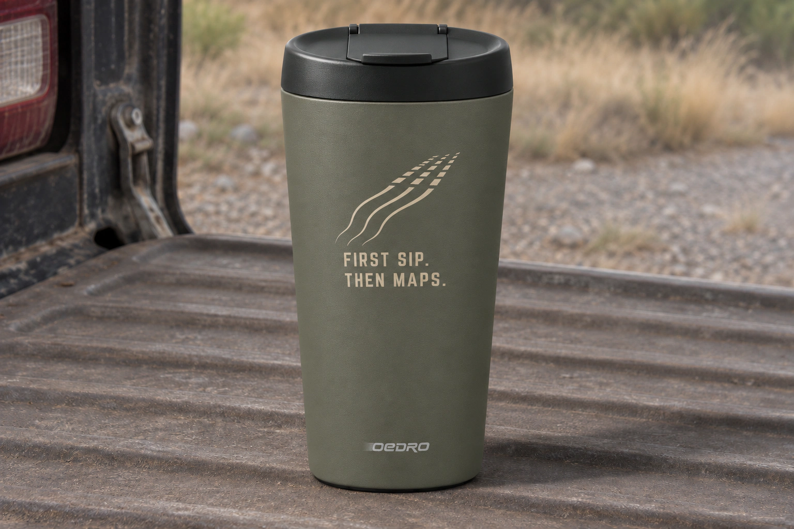
先喝一口再找路 First Sip, Then Maps Travel Cup
鼠尾草绿哑光粉末涂层，SUS304双层抽真空不锈钢。 正面丝印蒸汽变车辙图，含盖高158mm。 杯身正面下缘激光烧出本色钢OEDRO小标，宽20mm。
给厂家的规格
数量和交付：这一款单报价200个，同款同色，先打3个实样。优先现成杯身和盖模。请附现货款号、实物图、各段尺寸和实际称重。 容量与外形：有效容量355–365mL（12.0–12.3 US fl oz），装355mL后可正常旋盖，齐口容量380–400mL（12.8–13.5 US fl oz）。无把、直立微锥形。含盖高15.8±0.4cm（6.22±0.16in），杯口内径6.2±0.2cm（2.44±0.08in），杯身最宽7.4±0.2cm（2.91±0.08in），盖外径≤7.6cm（2.99in）。杯底外径6.25±0.05cm（2.46±0.02in）。含防滑垫，从底往上3.0cm（1.18in）全段外径≤6.30cm（2.48in），上部平顺过渡，实样正常插入内径6.40cm（2.52in）、深3.0cm（1.18in）的圆形检具。 结构：内外SUS304（18/8）不锈钢双层抽真空，建议内壁原板厚0.040cm（0.016in）、外壁0.050cm（0.020in）。内壁抛光无内涂层，杯口圆边。盖为炭黑色#353936食品接触级PP螺纹旋盖，带贴平翻片和止水塞，硅胶密封圈可徒手拆洗、可单配。杯底抽真空封点用无铅材料，底部薄防滑垫嵌平。 外观：细砂哑光粉末涂层，杯身Clay Sage #727C6D。杯正面居中做一处图案，总包络宽42×高48mm，图形区宽40×高31mm。三道细竖蒸汽线向右上方斜向延伸并渐变为断续车辙线，每道蒸汽线与对应车辙线相连，开放式工程线条，无边框。下方两行左对齐文字：FIRST SIP. / THEN MAPS.。大写字母高3mm，线条及间距≥0.5mm。图案底边距底面（含防滑垫）68mm，顶端距底面116mm。一色Oat Chalk #E5D8BF耐磨固化丝印。OEDRO 字标居中于图案轴线，下缘距最低外平面（含防滑垫）10 mm，可见宽度20 mm，高约3.3 mm。纤维激光轻蚀粉末涂层露出不锈钢本色#C8CCD0，保持原文件比例与起笔速度线。色值配实体色片对样。 验收：室温20±2°C（68±4°F），向未预热样杯注入355mL（12 US fl oz）、95±1°C（203±2°F）的水，旋紧闭合，6小时后测水温≥60°C（140°F），提供3只样品读数。常温装水300mL（10.1 US fl oz），闭盖倒置5分钟、横放30分钟，各无可见水珠。旋盖/翻片开合500次并做10次热冷循环后复验，检查螺纹无变形、盖不松脱、密封圈可拆装。内胆无异味和锈点，外涂层无明显露底、起泡、掉色，标清楚无掉墨或毛边。请提供固化墨样，做百格胶带附着检查后主图案保持完整。激光字标需全宽可读、起笔速度线完好、边缘利落无毛刺、无可见热变色。提供对应成品接触热饮的美国食品接触合规资料。 单件包装：软纸套防擦，加牛皮瓦楞单盒，外尺寸约8.5×8.5×17.5cm（3.35×3.35×6.89in），上口防压固定。装箱请回填每箱件数、外箱尺寸、毛净重。请分列200件含标志与单盒的出厂价、含税价、起订量、打样费、版费、样品与大货工期，辅报备用盖和密封圈单价。 款式、图案和 OEDRO 字标见附图。
下载规格文本
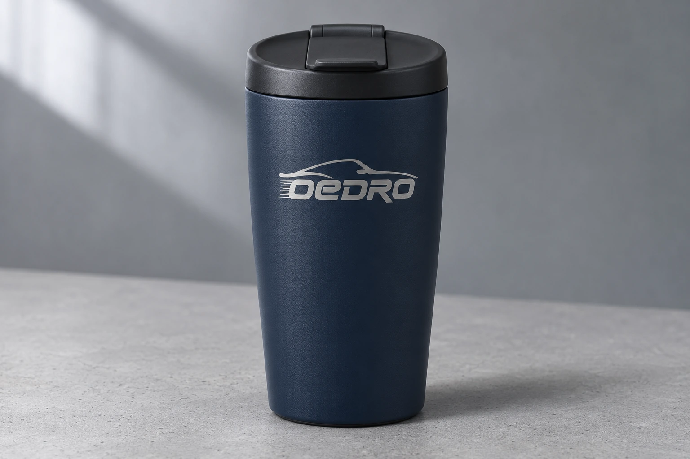
深海蓝 Midnight
深海蓝哑光杯身，激光露出不锈钢原色，留下一枚银色 OEDRO 标志。杯高 6.22 in（15.8 cm），杯底直径 2.46 in（6.25 cm）。
给厂家的规格
深海蓝保温杯 · Midnight Travel Mug 数量和交付：这一款单报价 200 个，同款同色，先打 3 个实样。优先现成杯身和盖模。请附现货款号、实物图、各段尺寸和实际称重。 容量与外形：有效容量 355–365 mL（12.0–12.3 US fl oz），装 355 mL 后可正常旋盖，齐口容量 380–400 mL（12.8–13.5 US fl oz）。无把、直立微锥形。含盖高 15.8 ± 0.4 cm（6.22 ± 0.16 in），杯口内径 6.2 ± 0.2 cm（2.44 ± 0.08 in），杯身最宽 7.4 ± 0.2 cm（2.91 ± 0.08 in），盖外径 ≤7.6 cm（2.99 in）。杯底外径 6.25 ± 0.05 cm（2.46 ± 0.02 in）。含防滑垫，从底往上 3.0 cm（1.18 in）全段外径 ≤6.30 cm（2.48 in），上部平顺过渡，实样正常插入内径 6.40 cm（2.52 in）、深 3.0 cm（1.18 in）的圆形检具。 结构：内外 SUS304（18/8）不锈钢双层抽真空，建议内壁原板厚 0.040 cm（0.016 in）、外壁 0.050 cm（0.020 in）。内壁抛光无内涂层，杯口圆边。盖为石墨黑 #25282B 食品接触级 PP 螺纹旋盖，带贴平翻片和止水塞，硅胶密封圈可徒手拆洗、可单配。杯底抽真空封点用无铅材料，底部薄防滑垫嵌平。 外观：深海蓝 #273649 细砂哑光粉末涂层。杯正面居中做一处原版 OEDRO 车形和字标，宽 5.0 × 高约 1.52 cm（1.97 × 0.60 in），标中心距底约 8.8 cm（3.46 in），按原文件比例。光纤激光轻除粉层露出自然钢银色，银色目视参考 #C8CCD0。不加银墨、烫箔或金属牌，检字缘和速度线，核露钢处无明显热变色或毛边。色值配实体色片对样。 验收：室温 20 ± 2°C（68 ± 4°F），向未预热样杯注入 355 mL（12 US fl oz）、95 ± 1°C（203 ± 2°F）的水，旋紧闭合，6 小时后测水温 ≥60°C（140°F），提供 3 只样品读数。常温装水 300 mL（10.1 US fl oz），闭盖倒置 5 分钟、横放 30 分钟，各无可见水珠。旋盖/翻片开合 500 次并做 10 次热冷循环后复验，检查螺纹无变形、盖不松脱、密封圈可拆装。内胆无异味和锈点，外涂层无明显露底、起泡、掉色，标清楚无掉墨或毛边。提供对应成品接触热饮的美国食品接触合规资料。 单件包装：软纸套防擦，加牛皮瓦楞单盒，外尺寸约 8.5 × 8.5 × 17.5 cm（3.35 × 3.35 × 6.89 in），上口防压固定。装箱请回填每箱件数、外箱尺寸、毛净重。请分列 200 件含标志与单盒的出厂价、含税价、起订量、打样费、版费、样品与大货工期，辅报备用盖和密封圈单价。 款式、图案和 OEDRO 字标见附图。
杯量与杯架尺寸 Capacity & cupholder fit
美国咖啡店常见的小杯为 12 美制液量盎司，约 355 mL，落在 350–400 mL 的目标范围。再大一档的 16 盎司约 473 mL。
市售杯架配件注明的适配内径有 2.5–3.0、2.57–3.5 和 2.6–3.8 英寸。两款杯底直径 2.46 英寸（6.25 厘米），从底部向上 1.18 英寸（3 厘米）以内，最宽处不超过 2.48 英寸（6.30 厘米）。量车上杯架最窄处和深度，留意限位卡爪；较深的杯架还需核对杯身宽度和车主手册。车型适配以实样为准。
车载香片 Car Air Freshener
一片是雪松香纸，另一款是夹在出风口的金属香薰。

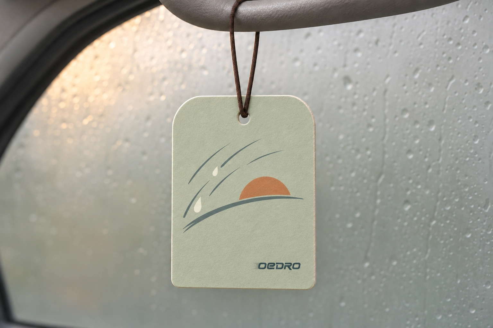
雨窗半日出 Dawn Trace Cedar
雾鼠尾草色棉纤维纸，双面耐香精油墨，正面印半轮日出与雨痕，背面复用底色，底部居中印 DAWN TRACE CEDAR。成品60×80毫米，深咖啡色松紧绳挂孔。OEDRO字标宽16毫米，正反面右下角。
给厂家的规格
请按 OEDRO Dawn Trace Cedar 车载香片，单款单香200件报价，另报3–5件实香样。 纸片：吸香棉纤维／纤维素原纸，厚2.0±0.2毫米（0.079±0.008英寸），尺寸60×80毫米（2.36×3.15英寸），外形公差±1毫米（0.04英寸）。竖版牌形，上边平直，两上角R12毫米圆角，两下角R3毫米（0.12英寸）圆角。头部垂直中心线距上边8毫米（0.31英寸）冲直径4毫米（0.16英寸）孔。挂绳为深咖啡色 #302B27 聚酯弹力绳，线径1.4毫米（0.055英寸），闭环周长120毫米（4.72英寸），对折长约60毫米（2.36英寸）。 印刷：双面CMYK，耐香精油墨，无膜哑面，钢刀模切与冲孔。正面底色雾鼠尾草绿 Mist sage #B7BDB0。图案为一轮小半日从两条弧形擦窗带后升起，几条雨丝和拉长水珠沿弧线弯曲，仅平面图形，无立体效果；图案宽46毫米、高48毫米，水平居中，图案顶边距成品上缘17毫米，左右各留7毫米安全距，图案底边距成品下缘15毫米；雨丝用 Rain slate #626F71，太阳用 Muted clay #B88B68，水珠高光用 Oat mist #D9D8C8。正面文字仅为 OEDRO。正反面右下角均印 OEDRO 官方斜体字标，不含车辆剪影，保持原有比例、右倾字母斜度和速度线；字标宽16毫米，可见高度约2.65毫米，颜色 Deep rain slate #49565A；字标右边缘距成品右边缘6毫米，最低油墨处距成品下边缘6毫米。背面重复雾鼠尾草绿底色和右下角字标，仅在底部居中加印香型标识 DAWN TRACE CEDAR，大写，字高2毫米，文字底边距成品下边缘12毫米。字标提供原始矢量文件，量产前须按实际油墨在纸样上核准颜色、字腔和速度线等细部。 香型：现有干雪松配方，低至中等强度，木质为主。请按实样提供每片加香重量与公差、当前适用IFRA车用固体载体类别符合声明（通常为Category 12）、SDS、成品标签建议和运输分类资料。无可见游离油；实样目标为23±2°C对照盲闻，开封当天浓度适中，第14天仍可辨认。请附厂内测试方法和结果。 包装：每片单独热封于95×135毫米（3.74×5.31英寸）高阻隔香袋，材质PET/AL/PE或经实测同等级阻香复合材料，封边至少5毫米（0.20英寸）。袋上加印英文使用说明，内容包含分段开袋、悬空悬挂避开驾驶视线、避免接触车内内饰。统一装箱并标批号。 质检：与确认样对色。干白布来回擦拭20次后字标清楚且无明显转色。密封样60°C放置24小时、冷却后检查封口、纸片和袋子，无游离油或渗染，挂孔无开裂。 请分项列200件人民币含税及未税单价、MOQ、打样费和工期、刀模费、包装费、净重和箱规。 款式、图案和 OEDRO 字标见附图。
下载规格文本
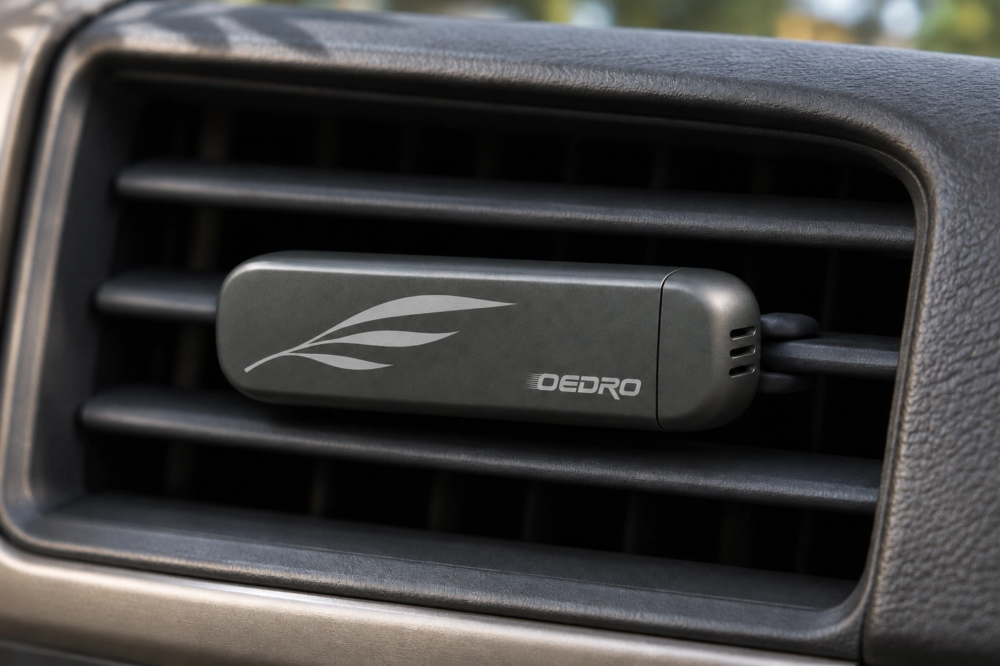
风吹树影夹 Crosswind Citrus
桉石墨色喷砂铝合金出风口夹，激光去色刻一棵被风吹斜的树影。壳体长65毫米，低光泽深炭色钢夹。OEDRO字标宽13毫米，正面右下侧。
给厂家的规格
请按 Crosswind Citrus 铝合金出风口固体香薰询价。单款单香，200套，每套含壳、夹及1枚香芯。另报3至5套实香样、同香型补充芯及其MOQ。 外壳：优先采用现有公模长条圆角铝合金盒，6063系或供应商确认同级牌号。目标壳体尺寸（不含夹）65×20×14毫米（2.56×0.79×0.55英寸），壁厚1.0至1.5毫米（0.039至0.059英寸）。请回传实际库存模具图纸、实测尺寸、公差和净重。本次报价不开新壳体模具。壳体整体做柔和桉石墨色 #4A5350 细喷砂哑光阳极氧化。两端或背侧保留散香孔，端盖可拆换芯且带机械止挡，端盖尖端至合缝名义距离12毫米。 图案与字标：正面主面板单次激光去色刻印。图案为单棵风吹树影，一根斜枝上扇形展开三片细长窄叶剪影，叶间留白，图案宽29毫米、高11毫米，主图最左界到壳体最左缘 7 毫米，下沿距壳体底边4.5毫米，保持在平面区域内并避开端盖合缝与圆角。正面仅刻 OEDRO 字样。字标使用官方斜体无车身轮廓版本，保持比例、右倾斜度与速度线，宽13毫米，可见高度约2.15毫米，置于固定前面板右下侧，字标最低边距壳体底边3毫米，字标右缘在端盖合缝左侧3毫米（名义位于壳体右端向内15毫米处），以端盖合缝为定位基准。刻印色值为自然露铝银灰，视觉目标 #B9BDC1，不做填墨。提供原始矢量文件，先在此阳极氧化面上做实壳打样，核准细线、内白与对比度。 夹子：低光泽深炭色弹簧钢夹，接触面配硅胶／TPE护套，护套色值 #222629。夹身外露长度目标25至30毫米（0.98至1.18英寸）。请说明适用风口叶片厚度、深度和方向，并回报实测装配结果。用1.5、2.0、3.0毫米（0.059、0.079、0.118英寸）平直试片试夹，标注实测兼容范围。拆装50次后夹头不开裂、护套不脱落、无明显松垮，端盖不脱开。 香芯：1枚可替换固体EVA香芯，沿用低至中等强度西柚皮加淡白茶配方。请回报单枚尺寸、净重、加香量与可供周期。请附当前适用于车载固体载体的IFRA符合声明（通常为Category 12）、SDS、成品标签建议和运输分类资料。不附瓶装补充液。密封样在60°C放置24小时后冷却，壳体及袋外无油痕，芯体未崩解，夹子可正常操作。请提供室温实测开包即用强度和第14天持续可辨性数据。 包装：香芯单独PET／AL／PE热封袋封装，再与壳体一同装入素色牛皮纸盒，目标外尺寸90×40×28毫米（3.54×1.57×1.10英寸），内配纸托及英文安装说明。检查组件之间是否有异味传递。 报价要求：分项列出200套人民币含税及未税单价、MOQ、打样和量产工期、激光刻印费、备芯费、包装费、整套净重及箱规。 款式、图案和 OEDRO 字标见附图。
下载规格文本帽子 Trucker & Camp Caps
挺括的网背卡车帽，或更贴头的五片软帽。两款均可调帽围。

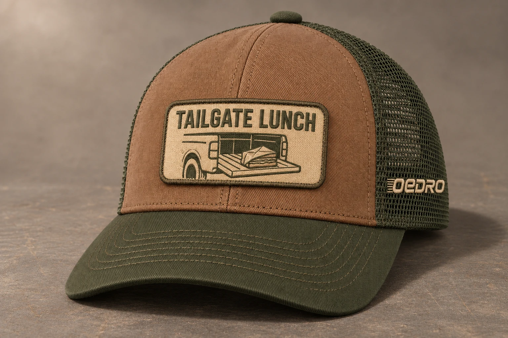
尾门吃午饭 Tailgate Lunch Trucker Cap
烟棕斜纹配暗橄榄网布卡车帽，前片缝皮卡尾门三明治织章。帽围可调55至61cm。左侧网片绣 OEDRO 字标宽37mm。
给厂家的规格
你好，想定制 OEDRO Tailgate Lunch Trucker Cap 六片网背卡车帽，同款同色 200 顶。请报 2 顶产前样、200 顶大货及相同规格 300 顶阶梯价。 帽体：中低冠六片结构，前二片＋帽檐面为 100% 棉斜纹 280±15 g/m²（8.3±0.4 oz/yd²），前片内加定型衬；后四片 100% 涤纶软网 160±15 g/m²（4.7±0.4 oz/yd²），内侧拼缝包边，棉涤吸汗带宽 3.0 厘米（1.18 英寸）。预弯帽檐，2.0±0.2 毫米（0.079±0.008 英寸）可弯 PE 内芯，六道同色平行车线。后部七位塑料排扣，帽围 55–61 厘米（21.7–24.0 英寸）；平放直量前冠高 10.5±0.5 厘米（4.13±0.20 英寸，自帽檐缝至冠顶的垂直高度），帽檐中心伸出长 7.0±0.3 厘米（2.76±0.12 英寸），展宽 18.0±0.5 厘米（7.09±0.20 英寸）。 颜色：前片斜纹烟草棕 #8A684E，帽檐、顶扣、后网和排扣深橄榄 #4D503B。请寄现货色卡，按确认布样配色并反馈同色织物、网布及塑料扣的最小起订量。 帽章：横向圆角长方形，圆角半径 3 毫米，高密度涤纶细织章，68×31 毫米（2.68×1.22 英寸）。底色褪色燕麦 #D7C5A1，图案深橄榄 #3D4334，包边棕橄榄 #57543D，四周车缝。图案内容为放下尾门的皮卡车斗，上置一份包装好的三明治，图标尺寸 28×10 毫米（1.10×0.39 英寸）。上方单行大写 TAILGATE LUNCH，字高 4.5 毫米（0.18 英寸），最小织线宽度 0.8 毫米。帽章左右居中跨前两片，下边离帽檐接缝 18±2 毫米（0.71±0.08 英寸）。请先给原尺寸织样确认细线、字腔和线色。请独立列出相同轮廓的热升华印涤纶织底布章备选价，仍用四周车缝。 侧标：佩戴者左侧网片直接平绣 OEDRO 字标，保留官方字标比例与速度线。字标宽 37 毫米（1.46 英寸），高约 6 毫米（0.24 英寸），线色褪色燕麦 #D7C5A1，底部加软网衬。字标起点距前片与网片拼缝向后 12 毫米（0.47 英寸），下边缘距底边汗带 16 毫米（0.63 英寸）。 交样和包装：查帽檐对称、帽章平整对位、无起线毛边及歪斜，排扣开合 100 次后仍能扣紧；常温手洗风干 3 次后，帽体和织章完好且白布擦拭无明显掉色。产前样须检查侧标清晰度、网布稳定性、对位及无起皱，并在上述水洗后检查侧标刺绣。每顶内托纸圈、独立防尘袋，帽檐不折压；每箱 50 顶，五层瓦楞分层隔纸。请单列打样费、制版费、成品含包装出厂价、发往国内集货点的运费、发票、起订量、样品和大货交期、单件净重与装箱尺寸毛重，并说明价格是否含税。 款式、图案和 OEDRO 字标见附图。
下载规格文本
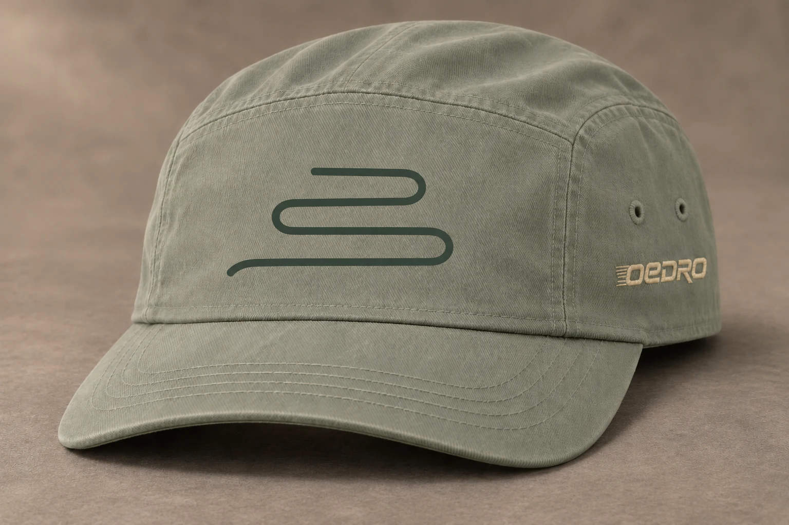
发夹弯露营帽 Switchback Camp Cap
水洗灰绿全棉斜纹五片帽，前片深绿水性丝印盘山路轮廓。帽围可调54至61cm。左侧片绣 OEDRO 字标宽37mm。
给厂家的规格
你好，想定制 OEDRO Switchback Camp Cap 五片低冠软帽，同款同色 200 顶。请报 2 顶产前样、200 顶大货及相同规格 300 顶阶梯价。 帽体：五片低冠软帽，整块前片无中缝，双侧各两个车缝透气眼。100% 棉水洗预缩斜纹 250±15 g/m²（7.4±0.4 oz/yd²），无硬衬，拼缝包边，棉涤吸汗带宽 3.0 厘米（1.18 英寸）。微弯帽檐，1.8±0.2 毫米（0.071±0.008 英寸）柔韧 PE 内芯，四道同色平行车线；后部同色棉织带 1.8 厘米（0.71 英寸）宽，搭配哑光枪灰日字扣 #595552。帽围 54–61 厘米（21.3–24.0 英寸）；平放直量前冠高 8.5±0.5 厘米（3.35±0.20 英寸，自帽檐缝至冠顶的垂直高度），帽檐中心伸出长 6.5±0.3 厘米（2.56±0.12 英寸），展宽 17.5±0.5 厘米（6.89±0.20 英寸）。 颜色：帽身、帽檐和调节带为水洗灰绿 #858F80，侧片刺绣用亚麻色 #D5C9AE，五金为哑光枪灰 #595552。先按确认布样打色，报现货相近色与定染两档起订量及价格。 图案：裁片缝制前，在无中缝前片上单色水性丝印深石板绿 #35453D 连续开放轮廓线条，描绘三个发夹弯盘山公路，两端圆角。图案宽 62 毫米，高 28 毫米，标称线宽 1.4 毫米。图案左右居中于前片，下边缘距帽檐接缝 20±2 毫米。做原尺寸印样，先核线条完整性与实布色差，水性墨按厂家工艺完整固化。 标志：佩戴者左侧斜纹侧片，位于两个车缝透气眼下方，直接平绣 OEDRO 字标。可见字标的起边在前片与左侧片拼缝向后 12 毫米处，字标下缘距成品底边 14 毫米。成品字标宽 37 毫米，约高 6 毫米，绣线色 #D5C9AE。保持官方字标比例与速度线，绣面平整不起皱。 质检：检查冠高和前幅对称、帽檐复原、五金圆滑、织带拉紧后稳固。常温手洗风干 3 次后，图案不开裂、不粘手、白布擦拭无明显掉色。检查侧片字标清晰度与透气眼下方的对位精度，面料不起皱。水洗循环后复查侧片刺绣状态。 交样和包装：每顶独立防尘袋，每箱 50 顶，五层瓦楞分层隔纸，轻叠防止帽檐压折。请单列打样费、网版费、成品含包装出厂价、发往国内集货点的运费、发票、起订量、样品和大货交期、单件净重与装箱尺寸毛重，并说明价格是否含税。 款式、图案和 OEDRO 字标见附图。
下载规格文本T 恤 T-Shirt
中性直筒版型，图样取自路上场景。

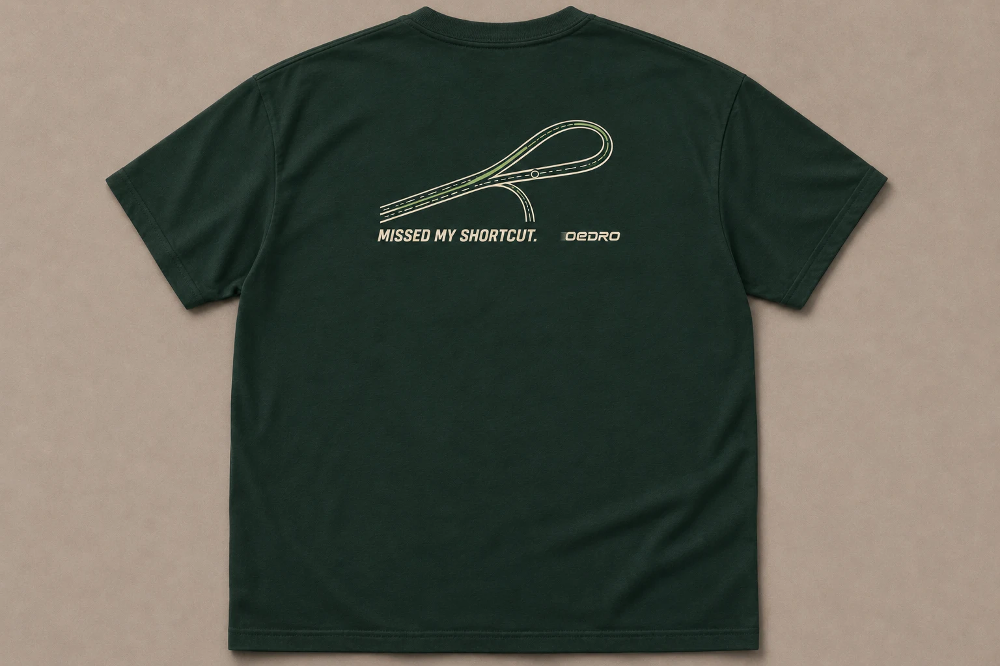
错过出口了 Missed My Shortcut Tee
深林绿纯棉T恤，后背两色水浆丝印公路图。中码平铺半胸宽55cm。右下 OEDRO 字标宽4.8cm。
给厂家的规格
您好，请按以下单款单色共 200 件成人中性款报价，按美码混码。 款式和面料：墨林色（Ink Forest）#24392F。235 g/m²（6.93 oz/yd²）100% 精梳环锭纺棉单面汗布，预缩，反应染同色批次。轻落肩、直摆，1×1 棉弹罗纹领高 2 cm（0.79 in），后领肩到肩包带，袖口及下摆双针。用现货最接近色给布卡并报同规格定制染色差价。 装饰：后中，两色水浆丝网印刷，整幅 24 × 12 cm（9.45 × 4.72 in），上缘距后领罗纹下缘 8 cm（3.15 in）。暖象牙色（Warm Ivory）#E9E4C9 印俯视公路立交示意图，含一条错过的匝道和一条淡苔色（Pale Lichen）#A5B889 路线继续穿过下一个环线；暖象牙色路缘、车道虚线及一个小空心圆标记分支。下方 MISSED MY SHORTCUT. 文案用大写中粗窄体斜体左齐，字高 1.45 cm（0.57 in）。路线每根线宽至少 1.5 mm（0.06 in）且保留留白，前面素面。右下方 OEDRO 官方纯字母字标，暖象牙色 #E9E4C9 水浆丝印，与图案共用象牙色网版，可见宽度 4.8 cm（1.89 in）、高度约 0.8 cm（0.31 in），保持矢量原比例，中心位于后中偏穿着者右侧 9.6 cm（3.78 in），下缘高于图案基线 0.4 cm（0.16 in）。按墨水供应商条件固化，洗 10 次字口清楚、墨面不开裂不脱落。请附 1:1 分色稿和实物油墨色样。 美码平铺成衣（腋下 2.5 cm / 1 in 处半胸宽 × 领侧最高肩点到下摆 × 肩宽 × 肩缝到袖口）： S 25 件：52 × 69 × 49 × 22 cm（20.5 × 27.2 × 19.3 × 8.7 in） M 45 件：55 × 72 × 51 × 23 cm（21.7 × 28.3 × 20.1 × 9.1 in） L 55 件：58 × 74 × 53 × 24 cm（22.8 × 29.1 × 20.9 × 9.4 in） XL 45 件：62 × 76 × 56 × 25 cm（24.4 × 29.9 × 22.0 × 9.8 in） 2XL 22 件：66 × 78 × 59 × 26 cm（26.0 × 30.7 × 23.2 × 10.2 in） 3XL 8 件：70 × 80 × 62 × 27 cm（27.6 × 31.5 × 24.4 × 10.6 in） 后领内中心缝英文尺码及 MADE IN CHINA，侧缝缝英文纤维成分、护理方式及实际制造商或责任方名称。请将唛版先随样提交。 请先提供 M、XL 实样、面料克重和成分数据。按护理说明 30°C 翻面机洗、晾干 3 次，胸宽和衣长缩水绝对值各 ≤3%。按相同护理条件洗 10 次后检查装饰。成衣尺寸公差 ±1.5 cm（0.59 in），面料克重公差 ±5%。色牢度干摩擦 ≥4 级、湿摩擦 ≥3 级。罗纹领应回弹平整，门幅侧缝扭斜 ≤3%。 请分列 200 件含装饰、英文唛及单件包装的人民币未税、含税单价、打样费、装饰开版费、开版费能否抵扣、最低起订量、样品和大货交期、外箱装量尺寸重量及中国境内运费。成品单件折叠入素色透明 PE 自封袋（折叠尺寸 27 × 21 × 2 cm），外贴款色和美码，按码分箱。 款式、图案和 OEDRO 字标见附图。
下载规格文本
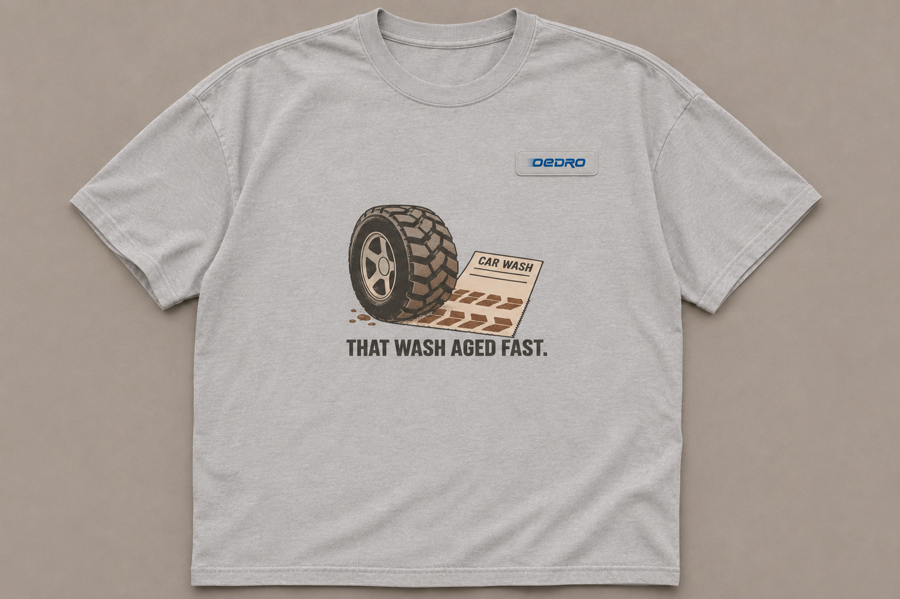
刚洗完又脏了 That Wash Aged Fast Tee
浅灰纯棉T恤，前胸三色水浆丝印轮胎压过收据。中码平铺半胸宽56cm。左胸织章上 OEDRO 字标宽5.1cm。
给厂家的规格
您好，请按以下单款单色共200件成人中性款报价，按美码混码。 款式和面料：浅灰 Light Ash Gray #D2D2CE。250 g/m²（7.37 oz/yd²）100%精梳环锭纺棉单面汗布，预缩、反应染。方身轻落肩，直摆盖过腰线。1×1棉弹罗纹领高2.2 cm（0.87 in），后领肩到肩织带，袖口与下摆双针。请先报现货近色并附布卡。 装饰：正面图案区域24 × 17 cm（9.45 × 6.69 in），居中置于前胸，上缘距领侧最高肩点24 cm（9.45 in），背面素色。图案内容为实心石墨色 Graphite #3B3935 越野轮胎低四分之三视角，沿对角线滚过一张浅色热敏纸洗车收据（抬头 CAR WASH）Receipt Paper #F1E7D5，在纸上留下同形干黏土色 Dried Clay #8C6248 胎块拖痕。下方排列压缩大写标语“THAT WASH AGED FAST.”，大写字母高度1.3 cm（0.51 in），与图像组左边缘对齐，最细印刷线条不小于1.5 mm（0.06 in）。使用三色哑光水性丝印，按油墨供应商规范固化。穿着者左胸单枚高密度涤纶提花织章，尺寸9.5 × 3.5 cm（3.74 × 1.38 in），倒圆角R 0.3 cm（0.12 in），底与包边为同色浅灰 #D2D2CE。带前端速度线的官方纯字母 OEDRO 字标在穿着者左胸织章上居中，用 #0D4D95 蓝色织线，保持原比例，可见宽度5.1 cm（2.01 in）、可见高度约0.84 cm（0.33 in）。织章顶部距领侧最高肩点18 cm（7.09 in），横向中心距前中10 cm（3.94 in）。边缘激光切后用同色线平缝一圈，线距边0.2 cm（0.08 in）。请提供1:1丝印分色片和1:1织样看速度线和字孔。 美码平铺成衣（腋下2.5 cm / 1 in处半胸宽 × 领侧最高肩点到下摆 × 肩宽 × 肩缝到袖口）： S 25件：53 × 66 × 51 × 22.5 cm（20.9 × 26.0 × 20.1 × 8.9 in） M 45件：56 × 69 × 53 × 23.5 cm（22.0 × 27.2 × 20.9 × 9.3 in） L 55件：59 × 71 × 55 × 24.5 cm（23.2 × 28.0 × 21.7 × 9.6 in） XL 45件：63 × 73 × 58 × 25.5 cm（24.8 × 28.7 × 22.8 × 10.0 in） 2XL 22件：67 × 75 × 61 × 26.5 cm（26.4 × 29.5 × 24.0 × 10.4 in） 3XL 8件：71 × 77 × 64 × 27.5 cm（28.0 × 30.3 × 25.2 × 10.8 in） 后领内中心缝英文尺码及MADE IN CHINA，侧缝缝英文纤维成分、护理方式及实际制造商或责任方名称。请将唛版先随样提交。 请先提供M、XL实样、面料克重和成分数据。按护理说明30°C翻面机洗、晾干3次，胸宽和衣长缩水绝对值各≤3%。按相同护理条件洗10次后检查装饰。成衣尺寸公差±1.5 cm（0.59 in），面料克重公差±5%。色牢度干摩擦≥4级、湿摩擦≥3级。洗10次后织章与衣身应平整，无翘角、线头及拉皱，丝印字迹清晰、墨层完整无开裂脱落。 请分列200件含装饰、英文唛及单件包装的人民币未税、含税单价、打样费、装饰开版费、开版费能否抵扣、最低起订量、样品和大货交期、外箱装量尺寸重量及中国境内运费。成品单件折叠入素色透明PE自封袋（折叠尺寸约27 × 21 × 2 cm），外贴款色和美码，按码分箱。 款式、图案和 OEDRO 字标见附图。
下载规格文本连帽卫衣 Hoodie
中性版型，两种内里可选：一款短绒，一款保留棉毛圈。

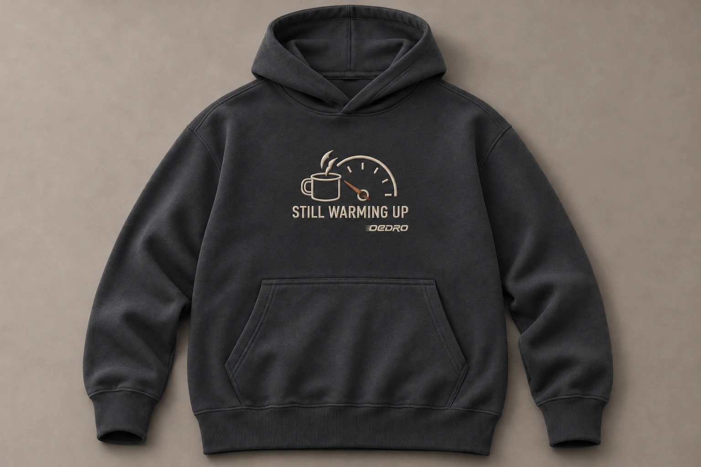
还在热车呢 Cold Start Fleece
石墨灰棉涤抓绒连帽衫，前胸双色平绣冒热气的杯子与仪表。中码平铺半胸宽57cm。标语下方 OEDRO 字标宽5.2cm。
给厂家的规格
您好，请按以下单款单色共 200 件成人中性款报价，按美码混码。 款式和面料：衣身石墨灰 #34363A。三线抓绒 360 g/m²（10.62 oz/yd²），整体 70% 棉、30% 涤纶。外面 100% 环锭精梳棉面纱，里侧是含涤的短绒层，报告实际底纱/绒纱配比。中厚蓬松，内侧为柔软短绒，常规折叠后可回弹。成人宽松套头，略落肩，双层两片帽；帽外为同衣身面料，帽里 180 g/m²（5.31 oz/yd²）同色全棉汗布。交叠帽口，无抽绳，袋鼠兜，兜口套结。袖口、下摆同色 2×2 棉弹罗纹，成品高 6 和 6.5 cm（2.36 和 2.56 in）。肩、袖窿、兜口双针。现货近色先报。 装饰：双色 40 番涤纶线平绣。前中图案为一个冒热气的露营杯和一个打开的模拟仪表，仪表有五个无数字刻度，低位指针用古铜 #C58B67 绣制，主图其余部分（含露营杯等）用暖骨白 #E7DECB 绣制。图案宽 20 cm、高 9 cm，居中，顶距前领口 8.5 cm，底距口袋上沿至少 5 cm。图案下方 1.5 cm 处绣标语 STILL WARMING UP，大写窄体半粗无衬线，单行居中，宽 17 cm，大写字母高 1.5 cm，用暖骨白 #E7DECB。标语下方 2 cm 处绣 OEDRO 官方斜体字标，仅字标，保持原比例，不含车形轮廓，用暖骨白 #E7DECB，宽 5.2 cm，可见高约 0.85 cm，位于穿着者左侧（观者右侧），右边缘与图案右边缘对齐。用柔软防拉皱衬，贴肤一面平整，走针先做原尺寸绣样审批。后背、袖子、口袋及其余位置素面。 美码平铺成衣（腋下 2.5 cm / 1 in 处半胸宽 × 最高肩点到下摆 × 肩宽 × 肩缝到袖口）： S 25 件：54 × 67 × 51 × 61 cm（21.3 × 26.4 × 20.1 × 24.0 in） M 45 件：57 × 69 × 53 × 62 cm（22.4 × 27.2 × 20.9 × 24.4 in） L 55 件：60 × 71 × 55 × 63 cm（23.6 × 28.0 × 21.7 × 24.8 in） XL 45 件：63.5 × 73 × 57.5 × 64 cm（25.0 × 28.7 × 22.6 × 25.2 in） 2XL 22 件：67 × 75 × 60 × 65 cm（26.4 × 29.5 × 23.6 × 25.6 in） 3XL 8 件：71 × 77 × 63 × 66 cm（28.0 × 30.3 × 24.8 × 26.0 in） 后领内中心缝英文尺码及 MADE IN CHINA，侧缝缝英文纤维成分、护理方式及实际制造商或责任方名称。请将唛版先随样提交。 请先提供 M、XL 实样、面料克重和成分数据。按护理说明 30°C 翻面机洗、晾干 3 次，胸宽和衣长缩水绝对值各 ≤3%。按相同护理条件洗 10 次后检查装饰。成衣尺寸公差 ±1.5 cm（0.59 in），面料克重公差 ±5%。色牢度干摩擦 ≥4 级、湿摩擦 ≥3 级。验收平绣字孔、车顶线、收边及贴肤衬，连续洗后无脱线、脱绒团；抗起球 ISO 12945-2 2000 转 ≥3 级。 请分列 200 件含装饰、英文唛及单件包装的人民币未税、含税单价、打样费、装饰开版费、开版费能否抵扣、最低起订量、样品和大货交期、外箱装量尺寸重量及中国境内运费。成品单件折叠入素色透明 PE 自封袋，外贴款色和美码，按码分箱。 款式、图案和 OEDRO 字标见附图。
下载规格文本
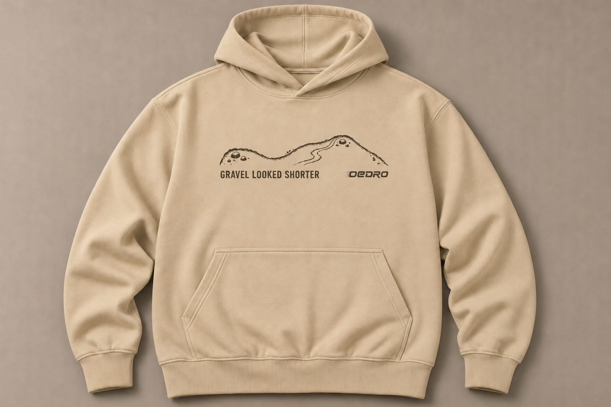
碎石路看着近 Gravel Detour Terry
燕麦色纯棉毛圈连帽衫，前胸单色水浆丝印蜿蜒山脊线。中码平铺半胸宽59cm。穿着者左侧（观者右侧）山脊线下方印 OEDRO 字标，宽5.2cm。
给厂家的规格
您好，请按以下单款单色共 200 件成人中性款报价，按美码混码。 款式和面料：燕麦米 #D8C9AE。410 g/m²（12.09 oz/yd²）100% 精梳环锭棉毛圈，外侧为平针棉面，内侧为同一织物的未抓绒棉毛圈。中厚偏重、有挺度，预缩且反应染。双层两片帽，帽外同身面料，帽里 180 g/m²（5.31 oz/yd²）同色全棉汗布，交叠帽口无抽绳，袋鼠兜口加套结。方身轻落肩，袖口和下摆同色 2×2 棉弹罗纹，成品高 6 和 6.5 cm（2.36 和 2.56 in）。肩、袖窿、兜口双针。现货近色优先，附原布与实染色卡。 装饰：正胸居中单色水性丝网印刷 #514637，从前领底点向下 8.5 cm（3.35 in）起印，正胸整组总宽 36 cm（14.17 in）、总高约 12 cm（4.72 in），其中山脊主图宽36 cm、高7.5 cm。上方为一条蜿蜒砾石山脊线从左至右横贯胸前，轮廓下方点缀数处短促断石纹。下方左对齐山脊线印 GRAVEL LOOKED SHORTER，大写 Barlow Condensed SemiBold，单行，字高 1.5 cm（0.59 in），标语整行总宽 21 cm（8.27 in），标语上缘距山脊主图下缘 1.7 cm（0.67 in）；图案与袋口相距至少 5 cm（1.97 in）。穿着者左侧（观者右侧）山脊线下方印官方斜体 OEDRO 字标，不含车形剪影，保持提供比例，宽 5.2 cm（2.05 in），可见高约 0.85 cm（0.33 in），右边缘与山脊线右边缘对齐，基线与标语对齐，与山脊线和标语同一版次单色水性丝网印。背后、袖子、口袋及其余部位素色。按油墨供应商条件固化。请随样交实际印色，十次洗后笔画不脱落、不开裂。 美码平铺成衣（腋下 2.5 cm / 1 in 处半胸宽 × 最高肩点到下摆 × 肩宽 × 肩缝到袖口）： S 25 件：56 × 66 × 53 × 60 cm（22.0 × 26.0 × 20.9 × 23.6 in） M 45 件：59 × 68 × 55 × 61 cm（23.2 × 26.8 × 21.7 × 24.0 in） L 55 件：62 × 70 × 57 × 62 cm（24.4 × 27.6 × 22.4 × 24.4 in） XL 45 件：65.5 × 72 × 59.5 × 63 cm（25.8 × 28.3 × 23.4 × 24.8 in） 2XL 22 件：69 × 74 × 62 × 64 cm（27.2 × 29.1 × 24.4 × 25.2 in） 3XL 8 件：73 × 76 × 65 × 65 cm（28.7 × 29.9 × 25.6 × 25.6 in） 后领内中心缝英文尺码及 MADE IN CHINA，侧缝缝英文纤维成分、护理方式及实际制造商或责任方名称。请将唛版先随样提交。 请先提供 M、XL 实样、面料克重和成分数据。按护理说明 30°C 翻面机洗、晾干 3 次，胸宽和衣长缩水绝对值各 ≤3%。按相同护理条件洗 10 次后检查装饰。成衣尺寸公差 ±1.5 cm（0.59 in），面料克重公差 ±5%。色牢度干摩擦 ≥4 级、湿摩擦 ≥3 级。毛圈里无抽丝、密度明显不均。抗起球 ISO 12945-2 2000 转 ≥3 级。 请分列 200 件含装饰、英文唛及单件包装的人民币未税、含税单价、打样费、装饰开版费、开版费能否抵扣、最低起订量、样品和大货交期、外箱装量尺寸重量及中国境内运费。成品单件折叠入素色透明 PE 自封袋，外贴款色和美码，按码分箱。 款式、图案和 OEDRO 字标见附图。
下载规格文本托特包 Tote Bag
宽提带能单肩背。侧袋帆布款拿水方便，拉链款适合在车里装零碎。

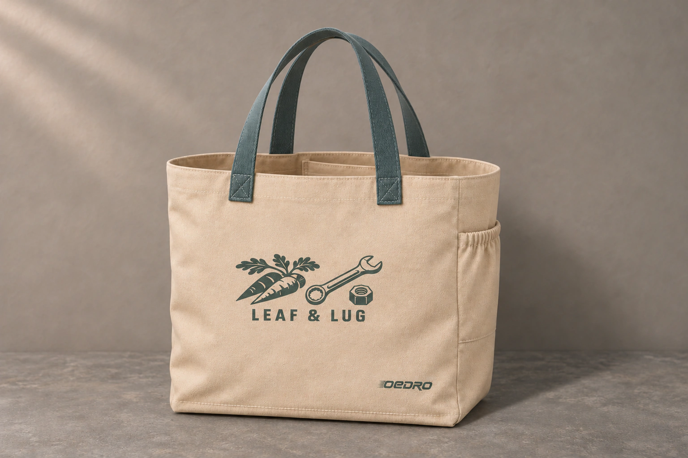
扳手配胡萝卜 Leaf & Lug Pocket Tote
未漂白燕麦色棉帆布，雾蓝提手，深灰绿单色丝印。 两根带叶胡萝卜挨着扳手和六角螺母，像修车中途顺手拔的菜。 袋身宽38厘米，右下角OEDRO小标宽42毫米。
给厂家的规格
您好，请按以下配置报价 Leaf & Lug Pocket Tote 侧袋托特 200 个。 袋身 38 × 34 × 12 cm（宽×高×底深，15.0 × 13.4 × 4.7 in），成品各边公差 ±1 cm（±0.4 in）。预缩 100% 棉平纹帆布 405 g/m² ±5%（约 12 oz/yd²），包身未漂白燕麦色 #D7C5AA。敞口、平底、无里布，内缝包边。右侧外贴袋一个，同布，平量宽 11 × 高 18 cm（4.3 × 7.1 in），开口加横向弹力包边，请用直径 7 cm（2.8 in）的水瓶试放。内置同布插袋 16 × 14 cm（6.3 × 5.5 in）。 两条暗风暴蓝 #536B70 全棉织带，宽 3.5 cm（1.4 in）、净垂高 26 cm（10.2 in），两侧对称。带头在袋口加强区做方框加叉缝，受力处回针，底缝双车，加涤纶车缝线。 正面居中单色深板岩绿 #465450 水性丝网印刷并热固化。图案为两棵带叶胡萝卜旁配一把组合扳手和一颗六角螺母的单色浮雕风格静物画，下方一排窄体工装字体 LEAF & LUG。图案与文字整体宽 175 mm × 高 100 mm，顶距成品袋口 95 mm。LEAF & LUG 大写字高 9 mm，最细笔画不小于 1.2 mm。背面素面。 正面右下角印 OEDRO 字标，同色 #465450，与主图同一版次丝印。字标宽 42 mm，高约 7 mm，右边缘距前片至侧墙拼缝向内 24 mm，下边缘距底缝向上 24 mm。按官方纯字标比例含速度线。 请在大货帆布上做等大试印样，核对墨色、细线、字母内腔及 OEDRO 字标清晰度。布样和印样确认后再生产。 成品抽样装 10 kg（22 lb）均布载荷悬挂 1 小时，再以 6 kg（13 lb）提放 100 次。提带锚点和底缝应无开线、脱带或撕裂。面料和印位按 ISO 105-X12，干摩擦 ≥4 级、湿摩擦 ≥3 级。美国销售用英文纤维成分、原产地及护理缝标，产地按实际填写。 每只平折套 5 cm（2.0 in）宽无覆膜牛皮纸腰封，25 只一外箱，箱内用洁净防潮内袋。请列含印刷与单件包装的 200 件含税出厂单价、起订量、打样费及可退条件、样品和大货交期、装箱尺寸和毛净重、江浙沪送仓运费。按此配置先做 2 个产前样，布样、印样和缝制一起确认。 款式、图案和 OEDRO 字标见附图。
下载规格文本
松绿拉链托特 Pine Zip Tote
约 16 oz 的深松绿全棉帆布，双层袋底，袋口用拉链收住。正面缝一枚品牌蓝细织章。袋身宽 16.5 × 高 12.6 × 深 5.9 英寸（42 × 32 × 15 厘米）。
给厂家的规格
您好，请按同款同色 200 个报价，深松绿全棉帆布拉链托特。 袋身 42 × 32 × 15 cm（宽×高×底深，16.5 × 12.6 × 5.9 in），成品各边公差 ±1 cm（±0.4 in）。主布用预缩 100% 棉染色平纹帆布 545 g/m² ±5%（约 16 oz/yd²），深松绿 #303D35。平底，底部同料双层，外圈同料上翻 2 cm（0.8 in）后平车，内缝同色包边，内侧同布插袋 18 × 16 cm（7.1 × 6.3 in）一个。袋口用 #5 尼龙线圈拉链，同色齿带，净开口约 36 cm（14.2 in），哑黑合金拉头一枚；两端回针加固。外侧与背面素面。 两条同色全棉宽织带，宽 4 cm（1.6 in），净垂高 25 cm（9.8 in）。接头为方框加叉缝，受力处回针，袋底双车，使用涤纶车缝线。 正面中心缝米白 #EEE4D0 高密度涤纶平织章，成品 11 × 4 cm（4.3 × 1.6 in），直角微圆，四边同底色沿边平车。织章顶距袋口 9 cm（3.5 in）。章上只织原版 OEDRO 车形＋字标，品牌蓝 #0D4D95，图案宽 9.0 cm（3.5 in），按原图比例高约 2.7 cm（1.1 in）。做等大织样，核字腔、车顶线与字之间的间距和细线。色号先用实体色卡核定。 成品抽样装 10 kg（22 lb）均布载荷悬挂 1 小时，再以 6 kg（13 lb）提放 100 次。提带、袋底、织章应无开线或撕裂。成品拉链空袋往返 500 次，齿无裂开，拉头无卡死。面料和织章按 ISO 105-X12，干摩擦 ≥4 级、湿摩擦 ≥3 级。美国销售用英文纤维成分、原产地及护理缝标，产地按实际填写。 每只平折套无覆膜牛皮纸腰封，腰封 5 cm（2.0 in）宽，20 只一外箱，箱内用洁净防潮内袋。请列含织章、缝章和单件包装的 200 件含税出厂单价、起订量、打样费及可退条件、样品和大货交期、装箱尺寸与毛净重、江浙沪送仓运费。按此配置先做 2 个产前样，布样、织章、拉链和缝制一起确认。 款式、图案和 OEDRO 字标见附图。
挡风玻璃贴 Vehicle Window Decal
车窗贴宽 13.0–14.5 厘米（5.12–5.71 英寸），接近美国大学校名车窗贴。当地允许时可贴后排固定侧窗下角，避开驾驶视野、雨刷、摄像头和加热线。
车窗贴在哪里？ Placement by state
加州和亚利桑那州前挡远离驾驶员的下角有 7 × 7 英寸（17.78 × 17.78 厘米）的贴纸区域，近侧只有 5 × 5 英寸（12.7 × 12.7 厘米），三款都超过近侧宽度。俄亥俄州允许前挡下角 6 英寸宽、4 英寸高，须避开车辆识别码。
佛州前挡只允许特定用途，纽约州前挡与后窗的贴纸须获授权。前挡或后窗受限时也要核对侧窗规定，特拉华州和内布拉斯加州对侧窗不透明标识另有限制。跨州使用可把两款背胶贴改贴在平滑工具箱上，静电款适合光滑玻璃。
加州车辆法 §26708 · 亚利桑那州法规 §28‑959.01 · 佛州法规 §316.2952 · 纽约州车辆及交通法 §375 · 俄亥俄州规定 · 特拉华州规定 · 内布拉斯加州规定

我绕远了 I TOOK THE LONG CUT.
深蓝底切角八边形PVC贴纸，数码印刷里程表图标。成品长145mm。右下 OEDRO 字标宽25mm。
给厂家的规格
询价产品：I TOOK THE LONG CUT. 户外玻璃车贴 成品尺寸145 × 43 mm（5.71 × 1.69英寸），公差±1 mm。贴在车外的平滑裸玻璃，图文从车外正向读。 面材约76 μm（3.0 mil）白色户外级可打印PVC（ORAJET 3621同等级），可移水性丙烯酸压敏背胶，干贴。印刷用耐候数码墨，覆63 ± 10 μm（约2.5 mil）抗UV透明哑光冷裱膜，面材与保护膜配套。 底色 #17344B 满版。上方排英文 I TOOK THE LONG CUT.，色值 #F3EBD6，无衬线窄体粗字，单行，字高10 mm，总宽约106 mm；图案原点距左边缘31 mm、距上边缘12 mm。左侧配蓝图风格里程表图标，19 × 13 mm，含三个空白滚轮和一个钩状extra-mile标记，色值 #9DCDE1 与 #F3EBD6，距左边缘7 mm，与英文纵向居中。成品贴纸刀线为切角八边形，切角约7 mm，R4 mm过渡。右下印 OEDRO 官方纯字标，色值 #F3EBD6，宽25 mm，视觉高度约5.6 mm，距右边缘8 mm、距下边缘5 mm。四边各留2 mm安全距离和2 mm印刷出血。 定位光标数控刀半穿模切，只切面材和覆膜，四周排废，底纸四边各留至少4 mm。每张配离型底纸、安装说明纸与透明单张袋，硬纸平放装箱。 验收：23±2℃下擦净裸玻璃，贴样养护48小时，再做24小时室温浸水和10次−20℃／70℃循环（每温度1小时）。边缘不翘起、无分层褪色。同批样按ASTM G154 UVA-340 250小时，色差ΔE00≤3。7天和30天在23±2℃分别缓慢低角度剥离，肉眼无可见残胶。请说明实际推荐移除期限及方法。 请按该版同图同色200张独立报价，先做3张产前样。请列200张含单件包装单价（含税及未税）、打样费、开刀/版费、起订量、交期、外箱实重和长宽高、国内寄样运费。请提供面材/胶/保护膜型号和技术数据、同类玻璃试贴照片及上述测试记录。图案用我方提供的OEDRO官方矢量和转曲文案。首样核准后生产。 长周期耐候和揭除试验请先提供同膜材、同胶系或静电膜、同墨及同保护层的现有记录，说明玻璃表面和试验条件。需重新送检时，请单列测试费、所需样数和完成日期。 款式、图案和 OEDRO 字标见附图。
下载规格文本
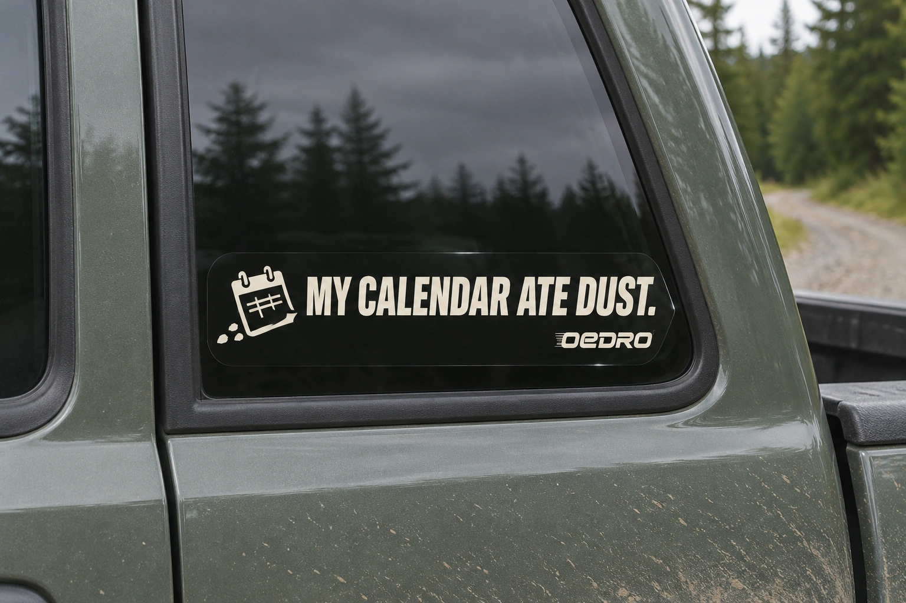
日程吃土了 MY CALENDAR ATE DUST.
透明高光PVC贴纸，暖白墨印倾斜日历页和尘土。成品长132mm。右下角 OEDRO 字标宽24mm。
给厂家的规格
询价产品：MY CALENDAR ATE DUST. 车外玻璃贴 成品尺寸 132 × 39 mm（5.20 × 1.54 英寸），公差 ±1 mm，成品刀线为不对称圆角旗形，右端斜切，圆角R4 mm。适用车外平滑裸玻璃。 材料结构为单层一体膜。面材采用光学透明户外级高光压延 PVC，厚度约 76 μm（3.0 mil）。背胶采用光学透明溶剂型可移丙烯酸压敏胶（如 GF 255 同等级）。表面覆配套高透低雾抗 UV 透明亮面保护膜，厚度 50–65 μm（2.0–2.6 mil）。透明区无油墨，图案距刀线至少留 2 mm 未印边距。 印刷内容全部使用高遮盖暖白色 #FAF4E6 油墨。标语 MY CALENDAR ATE DUST. 单行排列，窄体粗无衬线字体，大写高度 9 mm，总宽约 102 mm，距左侧 24 mm、距顶边 11 mm。图标为 16 × 17 mm 倾斜日历页图形，含两个装订环和三个棱角状灰尘碎屑，无文字标注，距左侧 5 mm、距顶边 7 mm。标志为 OEDRO 官方纯字标，宽 24 mm，视觉高度约 5.4 mm，距右侧 11 mm、距底边 5 mm。所有图文从车外正向可读。 厂家按膜材说明给出玻璃贴法。支持湿贴的产品随包提供操作说明及彻底干燥时长。 光标数控刀半穿模切排废，对位准确。离型底纸比贴纸每边宽至少 4 mm。单张贴纸配说明纸装入透明袋，平放装箱。 验收标准：以白墨样贴在深色玻璃上确认遮蔽性和轮廓。按膜材贴法装在清洁裸玻璃，养护至少 48 小时并待水分干透，不见白雾和气泡。24 小时室温浸水和 10 次 −20℃／70℃ 循环（每温度 1 小时）后无翘边、无白化分层。ASTM G154 UVA-340 250 小时后白墨目视无明显泛黄，透明区无雾化。同批分别于 7 天和 30 天在 23±2℃ 低角度缓撕，玻璃肉眼无可见残胶。请列推荐移除期限及方法。 请按该版同图同色 200 张独立报价，先做 3 张产前样。请列 200 张含单件包装单价（含税及未税）、打样费、开刀/版费、起订量、交期、外箱实重和长宽高、国内寄样运费。请提供面材/胶/保护膜型号和技术数据、同类玻璃试贴照片及上述测试记录。图案用我方提供的 OEDRO 官方矢量和转曲文案。首样核准后生产。 长周期耐候和揭除试验请先提供同膜材、同胶系或静电膜、同墨及同保护层的现有记录，说明玻璃表面和试验条件。需重新送检时，请单列测试费、所需样数和完成日期。 款式、图案和 OEDRO 字标见附图。
下载规格文本
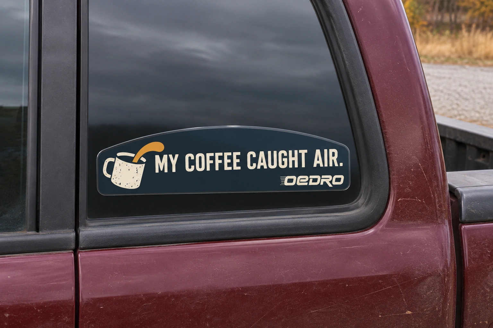
咖啡兜风了 MY COFFEE CAUGHT AIR.
深蓝底拱形静电贴，反向UV印半杯咖啡溅出水花。成品长130mm。右下方 OEDRO 字标宽24mm。
给厂家的规格
成品130×48mm（5.12×1.89英寸／13.0×4.8厘米），公差±1mm，横向低拱顶、平直底边、圆角≥R3mm。适用车内平滑裸玻璃，推荐固定后排侧窗，避开贴膜、陶瓷点阵、加热线和天线。 透明静电吸附PVC 175–190μm（约7mil），无胶，每边留4mm透明吸附边，边内无墨、无覆膜。请提供可从图案面贴玻璃的成熟工艺和样品。图案面镜像印刷，图案面贴在玻璃内侧，从玻璃外侧正读；用UV柔性墨，炭蓝#1F3144做拱形底色，奶油白#F4ECDA印单行标语MY COFFEE CAUGHT AIR.，压缩粗体复古无衬线，大写字高9mm，宽约96mm，距左27mm、距顶15mm。左上角印17×17mm半满营地杯及一滴咖啡飞溅图标，姜黄#E0A44A与奶油白#F4ECDA双色，距左8mm、距顶13mm。标语右半下方居中印官方纯OEDRO字标，奶油白#F4ECDA，宽24mm，视觉高度约5.4mm，距右13mm、距底7mm。全部有色区域满铺不透明白墨打底以防透色。 数控轮廓半穿模切，排废，硅化离型纸每边多留至少5mm，单张附防尘袋和安装说明。说明贴内侧，撕下贴回原底纸可重贴。硬纸平放装箱。 验收：样片先贴清洁裸玻璃，在室温垂直放置72小时，做10次−20℃／70℃循环（每温度1小时），再做40℃、相对湿度90%24小时，不滑移、不起边。ASTM G154 UVA-340 250小时后ΔE00≤3，透明边无明显黄化。来回揭贴5次仍吸附，室温慢揭后玻璃肉眼无可见残留。请随报价写预计更换周期及适用的玻璃温度。 请按该版同图同色200张独立报价，先做3张产前样。请列200张含单件包装单价（含税及未税）、打样费、开刀/版费、起订量、交期、外箱实重和长宽高、国内寄样运费。请提供面材/保护膜型号和技术数据、同类玻璃试贴照片及上述测试记录。图案用我方提供的OEDRO官方矢量和转曲文案。首样核准后生产。 长周期耐候和揭除试验请先提供同膜材、同静电膜、同墨及同保护层的现有记录，说明玻璃表面和试验条件。需重新送检时，请单列测试费、所需样数和完成日期。 款式、图案和 OEDRO 字标见附图。
下载规格文本磁吸折叠手机支架 Magnetic Phone Grip
展开时留出双指握位，也能横放手机看视频。底座贴合兼容的磁吸手机或手机壳，充电时顺手取下。

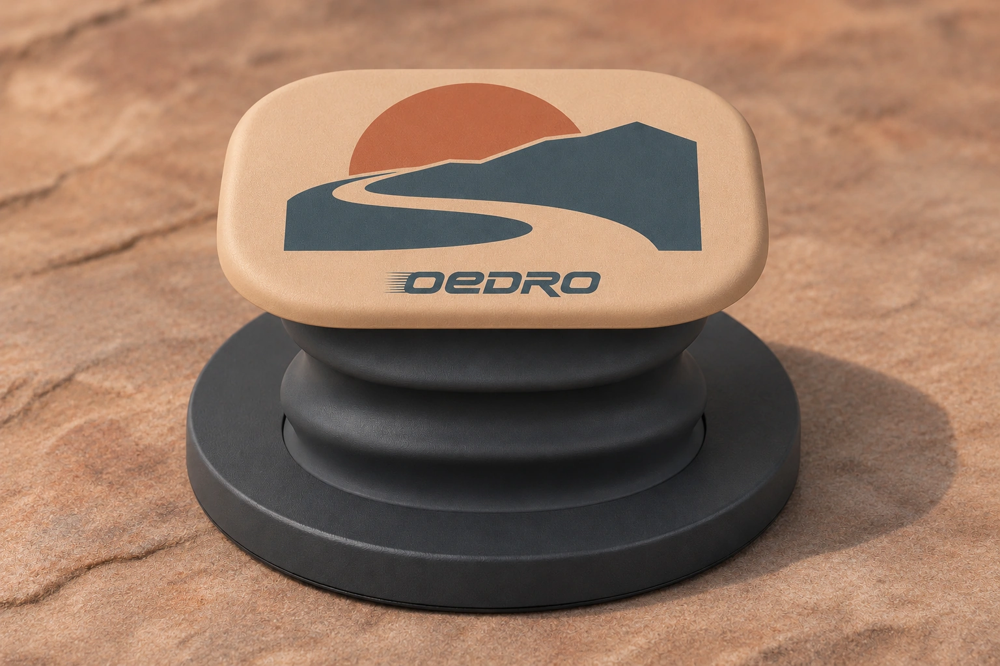
哑光落日弯 Blind Bend Sunset
深灰底座配沙色顶盖，双色移印画出山脊后的落日和山脊下的弯道。顶盖44×36mm，收合高8mm。OEDRO字标在图案下方居中，宽13mm。
给厂家的规格
请报 OEDRO Blind Bend Sunset 磁吸气囊手机支架，同款同色 200 件。 顶盖：沿用现有 Grip A 模具，ABS 注塑原色 #D5B893，细纹咬花哑光，圆角长方形 44 × 36 mm（1.73 × 1.42 in），四角半径约 8 mm（0.31 in），顶板壁厚约 2.0 mm（0.079 in）。正面用耐磨双组分移印油墨做两次套印。先印赤陶色落日（#A76B51），再印蓝灰色山脊、弯道与官方 OEDRO 纯字标（#495960）。图案为两色剪影，赤陶色落日隐于棱角山脊后，山脊下方为宽阔蓝灰弯道，沙色负空间切出道路弧线，无标语。图案区域 28 × 21 mm，置于顶盖正面上部居中，主图边界距左、右侧边各 8 mm、距顶盖上缘 5 mm。字标宽 13 mm，等比高约 2.1 mm，水平居中置于图案下方，字标边界距下缘 3.5 mm、距左右侧边各 15.5 mm，按顶盖轴线测量。图案名义正线与留白间隙最小 0.65 mm，厂前须在咬花 ABS 样上确认着墨与套位。厂前先确认图案矢量样、移印打样和油墨刮样，表面 500 次干毡摩擦后图案与字标仍清楚完整。 基座与尺寸：炭黑色 #222628 的 PC+ABS 注塑件，底座外径 Ø56 mm（2.20 in）±0.5 mm（0.02 in），一段展开总高约 14 mm（0.55 in），二段展开约 22 mm（0.87 in），收合厚度 8 mm（0.31 in）±1 mm（0.04 in），单件净重 ≤35 g。圆周外缘倒圆 ≥0.6 mm（0.024 in），侧缘预留指腹拆卸位。 磁吸与防滑：配分段环形钕铁硼磁阵列，磁体外径目标 Ø54 mm（2.13 in）、厚约 2 mm（0.079 in），优先报 N52 或同级磁通方案。随样交磁材牌号、实际尺寸、分段极向图和背面低碳钢导磁片结构。磁体封装，不外露。背面用约 0.3 mm（0.012 in）哑炭黑 #222628 防滑软硅胶接触层，整圈齐平，厂内固定，用户侧直接吸附兼容磁吸手机或保护壳。 折叠：成熟模具的两段 深灰绿 #343938 TPU 弹性气囊，建议 Shore A 80–85，固定顶盖，卡点明确，按压收平。侧面指腹接触边须平滑。开启用力 2.0–4.5 N、收合 3.0–7.0 N，夹紧底座后用推拉力计轴向慢测。横屏支架放在平整桌面，需稳定托住 250 g 手机 30 分钟。 兼容性：至少给出 iPhone 13 mini、iPhone 15 Pro Max 两个裸机与官方磁吸保护壳实贴结果，记录各型号摄像头净空，底座完整接触、可定位及拆卸。普通无磁光滑硬壳的背胶转接环单独选报，冲压去毛刺的 430 不锈钢外径 Ø55 mm（2.17 in）、内径 Ø45 mm（1.77 in）、厚约 0.4 mm（0.016 in），配可追溯的 3M 9495LE 约 0.17 mm（0.0067 in）或同等级实测胶。用定位纸，将环贴在清洁的光滑硬壳上并静置 72 小时后测试。说明卡列支持的表面、充电或装车载磁吸座前取下握持件，转接环单独评估充电和黏着兼容。 样品门槛：室温让底座居中，垂直匀速拉底座中心至脱离，裸机拉脱 6.4–8.8 N，官方磁吸保护壳上 ≥7.8 N。记录每个型号每种组合 3 次的最小、最大值。另用垂直姿态施加 5 N 平面切向力 10 秒，位移 ≤2 mm（0.08 in），连接不脱开。背胶环按相同磁吸剪切方式验证，另外在 45°C 平滑硬壳上承 5 N 平面负荷 24 小时，位移 ≤1 mm（0.04 in），无翘边。至少 3 件各开合 5,000 次后仍能稳定卡位，TPU 无裂纹，顶盖固定，开合力与磁吸复测仍达标。厂内固定底座做 30 N 轴向结构拉力 10 秒，盖、气囊、底座和胶层完整。每件手检开合、外观及磁阵列装反。 交付：每件单独保护纸袋及带卡扣的牛皮纸托，包装外尺寸建议 80 × 80 × 15 mm（3.15 × 3.15 × 0.59 in），英文说明卡。外箱加隔档防磨，报装箱尺寸和毛重。按成熟可对美供货的自有或授权模具报价，附结构图、外观和机构权属材料，供生产前核对。请分列 200 件人民币含税及未税单价、标志加工、包装、打样 3 件费用和周期、确认样到交货天数、最小起订量、色差样和本地运费。大货前须在样品上确认实际工艺与颜色。 款式、图案和 OEDRO 字标见附图。
下载规格文本
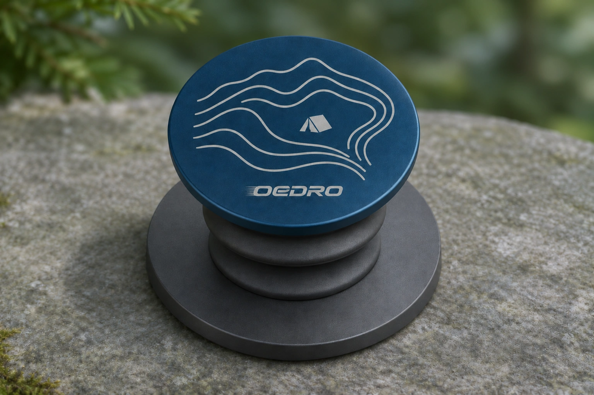
等高线小帐篷 Camp Contour
深蓝阳极氧化铝盖，激光刻出等高线绕着小帐篷。顶盖直径42mm，收合高8mm。OEDRO字标在图案下方居中，宽13.5mm。
给厂家的规格
请报 Camp Contour 磁吸气囊手机支架 200 件。 顶盖：6063 铝合金薄片冲制，可另报同厚 5052-H32 现成板材，直径 Ø42 mm（1.65 in），片厚 1.2 mm（0.047 in）。细喷砂后深海蓝阳极氧化，色值 #28455A，氧化膜 10–15 μm，周边倒圆，机械压边固定在 #222628 PC+ABS 顶盖载体。前盖正面所有图样、文字及标记一律单次装夹激光去色，露出银灰色铝本色 #BFC5C7，不加油墨，不改模具。顶面中心偏上做单色激光去色图案，六条不对称嵌套等高线环绕小帐篷剪影，整体构图留一个开口山谷，无海拔数字和标语，图案尺寸 27 × 24 mm。图案位于 Ø42 mm 顶面上部中心，左右边界距顶盖左右极值点各 7.5 mm，上边界距顶盖上极值点 5 mm，所有路径保持至少 2 mm 径向边缘净空。激光线条名义宽度 0.42 mm，留白间距 ≥0.65 mm。图案下方居中激光去色刻 OEDRO 纯字标，宽 13.5 mm，等比高约 2.2 mm，工艺与图案一致。字标下缘距顶盖下极值点 4.5 mm，左右边界距顶盖侧极值点各 14.25 mm。先交激光样，在量产表面确认对比度和细线分离度；500 次干毡摩擦后图案和字标清楚，边缘无粗糙或发毛。 基座与尺寸：#222628 的 PC+ABS 注塑件，底座外径 Ø56 mm（2.20 in），外径公差 ±0.5 mm（0.02 in）。展开两段总高分别约 14 mm（0.55 in）与 22 mm（0.87 in），收合厚度 8 mm（0.31 in），收合高度公差 ±1 mm（0.04 in），单件净重 ≤35 g。圆周外缘倒圆半径 ≥0.6 mm（0.024 in），侧缘预留指腹拆卸位。 磁吸与防滑：配分段环形钕铁硼磁阵列，磁体外径目标 Ø54 mm（2.13 in）、厚约 2 mm（0.079 in），优先报 N52 或同级磁通方案。随样交磁材牌号、实际尺寸、分段极向图和背面低碳钢导磁片结构。磁体封装，不外露。背面用约 0.3 mm（0.012 in）哑黑 #222628 防滑软硅胶接触层，整圈齐平，厂内固定，用户侧直接吸附。 折叠：成熟模具的两段式 深灰绿 #343938 TPU 弹性气囊，建议 Shore A 80–85，固定顶盖，卡点明确，按压收平。侧面指腹接触边须平滑。开启用力 2.0–4.5 N、收合 3.0–7.0 N，夹紧底座后用推拉力计轴向慢测。横屏支架放在平整桌面，需稳定托住 250 g 手机 30 分钟。 兼容性：至少给出 iPhone 13 mini、iPhone 15 Pro Max 两个裸机与官方磁吸保护壳实贴结果，记录各型号摄像头净空，底座完整接触、可定位及拆卸。普通无磁光滑硬壳的背胶转接环单独选报，冲压去毛刺的 430 不锈钢外径 Ø55 mm（2.17 in）、内径 Ø45 mm（1.77 in）、厚约 0.4 mm（0.016 in），配可追溯的 3M 9495LE 约 0.17 mm（0.0067 in）或同等级实测胶。用定位纸，将环贴在清洁的光滑硬壳上并静置 72 小时后测试。说明卡列支持的表面、充电或装车载磁吸座前取下握持件，转接环单独评估充电和黏着兼容。 样品门槛：室温让底座居中，垂直匀速拉底座中心至脱离，裸机拉脱 6.4–8.8 N，官方磁吸保护壳上 ≥7.8 N。记录每个型号每种组合 3 次的最小、最大值。另用垂直姿态施加 5 N 平面切向力 10 秒，位移 ≤2 mm（0.08 in），连接不脱开。背胶环按相同磁吸剪切方式验证，另外在 45 °C 平滑硬壳上承 5 N 平面负荷 24 小时，位移 ≤1 mm（0.04 in），无翘边。至少 3 件各开合 5,000 次后仍能稳定卡位，TPU 无裂纹，顶盖固定，开合力与磁吸复测仍达标。厂内固定底座做 30 N 轴向结构拉力 10 秒，盖、气囊、底座和胶层完整。每件手检开合、外观及磁阵列装反。 交付：每件单独保护纸袋及带卡扣的牛皮纸托，包装外尺寸建议 80 × 80 × 15 mm（3.15 × 3.15 × 0.59 in），英文说明卡。外箱加隔档防磨，报装箱尺寸和毛重。按成熟可对美供货的自有或授权模具报价，附结构图、外观和机构权属材料，供生产前核对。请分列 200 件人民币含税及未税单价、标志加工、包装、打样 3 件费用和周期、确认样到交货天数、最小起订量、色差样和本地运费。大货前以实物样品确认工艺和颜色。 款式、图案和 OEDRO 字标见附图。
下载规格文本随礼卡 Gift Enclosure Card
两张都留了手写位置。大卡写得下几句，小卡能放进口袋。

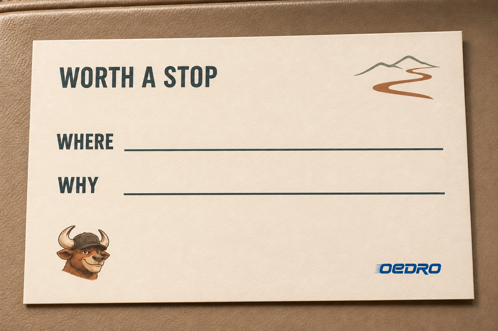
值得停一下 Worth a Stop Postcard
暖白无涂布卡纸双面数码印，横版明信片。右上角是鼠尾草绿山脊和锈红盘山路。左下角是戴深棕工作帽的 Bruno 四分之三侧面公牛头像。成品152.4×101.6毫米，右下角OEDRO蓝标宽19毫米。
给厂家的规格
请按 OEDRO Worth a Stop Postcard 公路明信片，单款 200 张报价，另报 3–5 张实纸样。 成品 6 × 4 英寸（152.4 × 101.6 毫米），横版直角单卡，裁切公差 ±0.6 毫米。350 ± 20 g/m² 高松厚暖白无涂布卡纸，纸色 #F4EFE5，厚度目标 0.40–0.48 毫米。请报纸厂、纸号和实际厚度。 双面数字印刷，正面 CMYK，背面印一条锈色横线。纸面全哑光无膜，印区安全边至少 5 毫米。颜色按实纸样签色，需签批实物打样确认墨色平衡、文字、线条、矢量字标及 Bruno 图案。 正面左上角 x 10 mm、y 13 mm 处印“WORTH A STOP”，中等字重窄体无衬线，20 pt，色值 #34464D。x 10 mm、y 40 mm 和 y 57 mm 处分别印“WHERE”和“WHY”，9 pt 大写无衬线，色值 #34464D。每个标签右侧留 112 mm 手写区，不印底色。y 49 mm 和 y 66 mm 处各印一条细线，从 x 30 mm 至 x 142 mm，线宽 0.40 mm，色值 #657679。右上角印山脊与盘山路小图，尺寸 38 × 23 mm，距右边缘 10 mm、距上边缘 10 mm，使用简单平涂笔触，最小着墨线宽 0.40 mm，山脊色值 #748176，路面色值 #A16850。左下角印 Bruno 头部图案，图形边界距左边缘 10 mm、距底边缘 8 mm，宽 18 mm，高 17 mm，为简化的成年公牛四分之三侧面头像，双角向上，毛色 #956044，口鼻及双角 #D2AC85，深色工作帽 #4C4641，帽徽简化为同色块。正面右下角印 OEDRO 字标，图形末端距右边缘 10 mm、距底边缘 8 mm，宽 19 mm，位置公差 ±0.6 mm，色值 #0D4D95，由 Hub 矢量字标直接数字印刷，保留原始倾斜字形和速度线。 背面 x 10 mm、y 11 mm 处印一条横线，长 25 mm，宽 0.80 mm，色值 #A16850。其余无涂布面全部留白供手写。 质检：正背方向一致，裁边方正干净无白毛边，墨色均匀。白棉布干擦 20 次无明显掉墨。圆珠笔和 0.5 毫米中性笔在两面留白书写区均可书写，落笔 5 秒后轻擦无明显拖墨。 每 50 张平放一叠，夹干净隔纸，用纸束带扎好。使用干燥运输纸箱和纸护角压住卡片保持平整。 请分项列出 200 张人民币含税及未税单价、实际 MOQ、开样及大货交货时间、打样费、备品单价、外箱尺寸和实际毛重。 款式、图案和 OEDRO 字标见附图。
下载规格文本
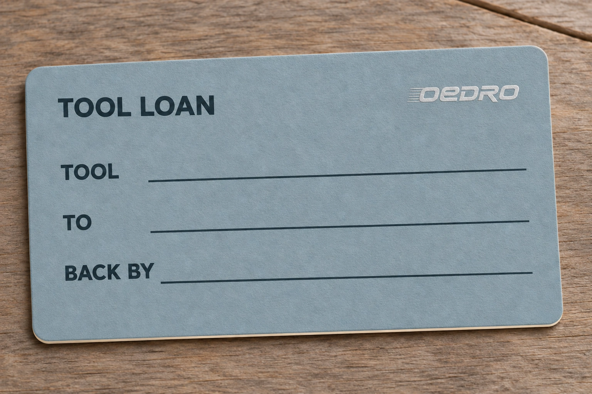
借工具记得还 Tool Loan Pocket Card
雾蓝灰特种纸双裱，正面数码印字加独立烫银版，四角圆切。背面是暖白书写面，留给你写备注。成品88.9×50.8毫米，右上角烫银OEDRO标宽17毫米。
给厂家的规格
请按 OEDRO Tool Loan Pocket Card 报价，单款200张，另报3–5张包含实纸、烫银及圆角的样品。 横版3.50×2.00英寸（88.9×50.8毫米），模切四角R3毫米（0.12英寸），公差±0.6毫米（0.024英寸）。双裱共约440±30 g/m²。正面220 g/m²原浆染色细织纹特种纸，色值#899BA5。背面220 g/m²暖白无涂布卡，色值#F3EBDD。厚度目标0.53–0.65毫米（0.021–0.026英寸）。双裱纸纹同向，胶层均匀平整，不渗色。 正面图文全部以成品正面为基准，x从左边起算，y从顶边起算。标题“TOOL LOAN”排在x 7 mm、y 7 mm，半粗无衬线体13 pt，色值#293B46。下方三行标签“TOOL”“TO”“BACK BY”均排x 7 mm，中等粗细大写无衬线体7.5 pt，色值#293B46，书写基线分别在y 22、31、40 mm。每行右侧配书写横线，线宽0.40 mm，色值#526573，自x 26 mm延伸至82 mm。三处书写区留空，露出原浆染色纸面，不印刷、不覆膜。 正面右上角烫 OEDRO 字标，雾面银箔参考#BFC7CE，宽17毫米，边缘公差±0.6毫米。图案右端距右边缘7毫米，顶端距上边缘7毫米。采用单独烫银版，源文件使用 assets/merch-collection/brand/wordmark.svg 矢量稿。须在实物纹理纸上打样，核对字腔和速度线，确认无溢箔、无针孔。 背面为暖白无涂布书写面，全幅留白，不印刷，不覆膜。安全边至少4毫米。 质检：成品平整、粘合紧密、圆角干净。查缺箔、针孔、溢箔、字腔糊死。正面字标区域以白棉布干擦20次无明显掉箔。正面书写区和背面用圆珠笔和0.5毫米中性笔试写，落笔5秒后轻擦无明显拖墨。 包装：每50张夹隔纸平放扎带，装入防潮外箱，保护圆角防压。 请分项列200张人民币含税及未税单价、MOQ、实物打样时间和费用、烫银版费、圆角模费、备品价、量产时间及箱规。 款式、图案和 OEDRO 字标见附图。
下载规格文本九件礼包的三种装法Gift Kit Packaging
200 份优先用瓦楞飞机盒。一开盖就能看到帽子和杯子，一箱直接寄。磁吸盒适合完整拍下开箱过程，拉链托特适合拆完继续使用。
飞机盒加腰封Corrugated Mailer

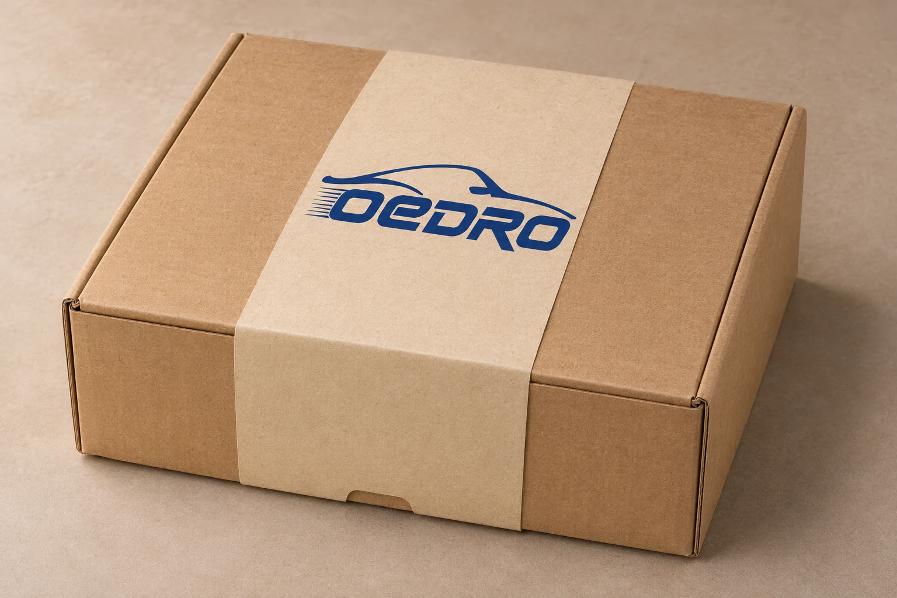

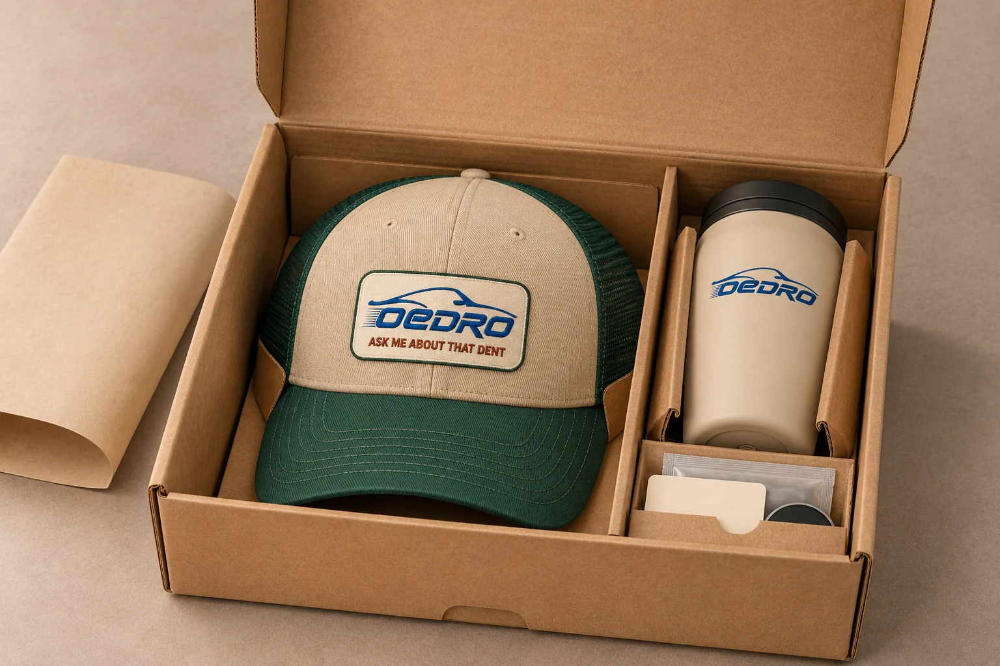

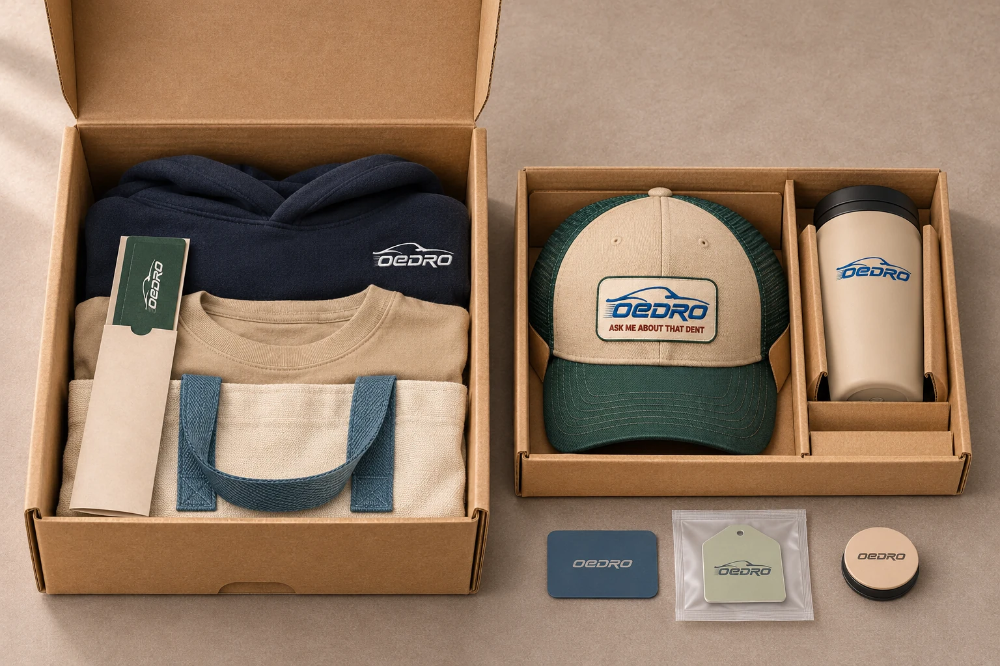
- 材质与开合
- 牛皮色瓦楞板、单色纸腰封、前插舌。展示时腰封套在盒外，寄件时收于盒内，前舌和两侧锁口用封箱胶带封牢。
- 运输外尺寸
- 38 × 29 × 21 cm（15.0 × 11.4 × 8.3 in）。估计毛重 2.2 kg，体积重 3.86 / 4.63 kg（除数 6,000 / 5,000）。
- 每套包材
- ¥10–17，含运输外箱和固定材料。仓库或办公室都能装。一个箱子直接寄，材料和体积都省；雨水或挤压会先伤外表，内侧卡片保留干净的开箱画面。
磁吸翻盖硬盒Magnetic Rigid Box

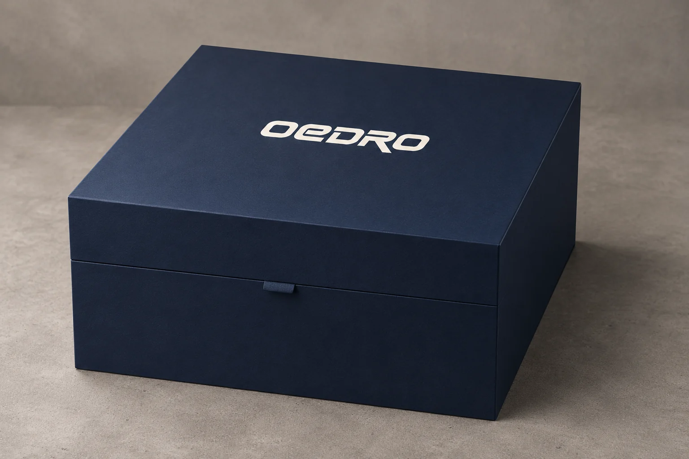

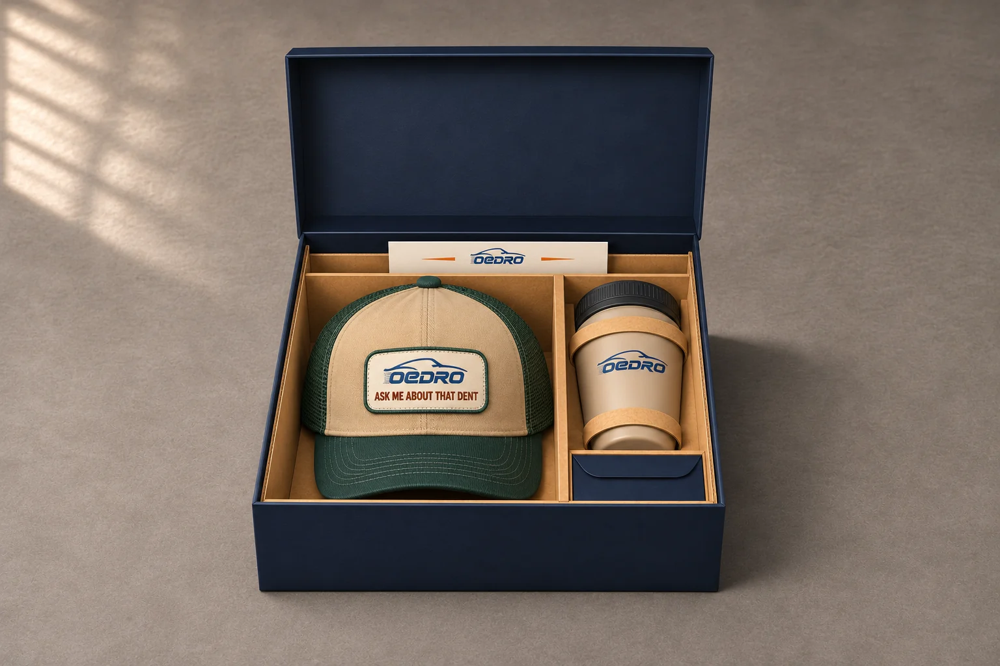

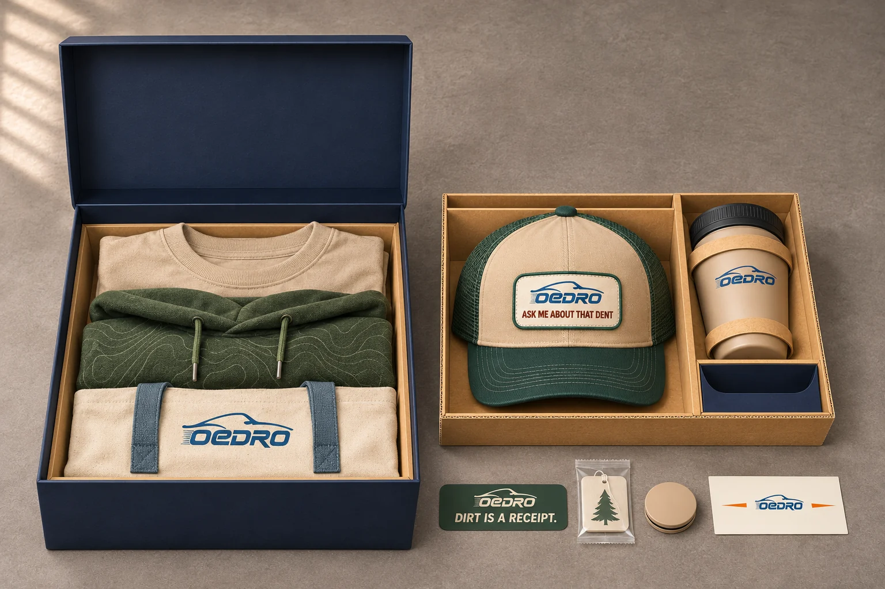
- 材质与开合
- 裱纸灰板、隐藏磁片和翻盖。硬盒外尺寸约 37.5 × 28.5 × 20.5 cm（14.8 × 11.2 × 8.1 in）；硬盒净空需容下 36 × 27 × 19.5 cm 的内装，再套瓦楞运输箱、加纸护角。
- 运输外尺寸
- 41 × 32 × 24 cm（16.1 × 12.6 × 9.4 in）。估计毛重 2.7 kg，体积重 5.25 / 6.30 kg（除数 6,000 / 5,000）。
- 每套包材
- ¥22–36，含运输外箱和固定材料。适合由礼盒厂配托、装箱。盒盖能立住，方便连续拍开箱；还要再装一层，且外箱超过美国邮政的一立方英尺体积门槛。
拉链托特礼包Reusable Zip Tote

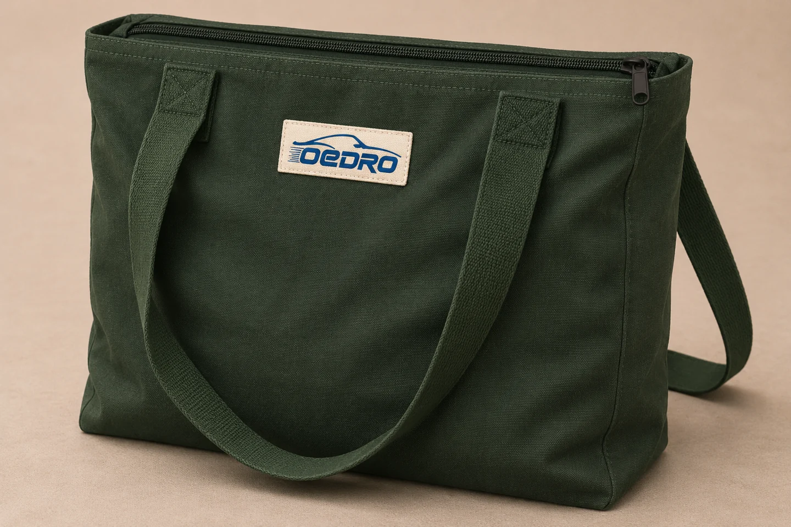

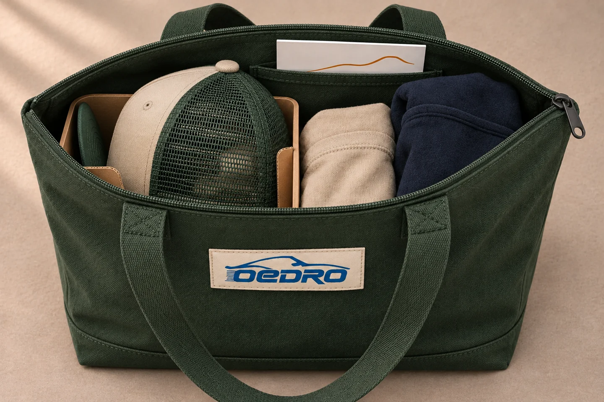

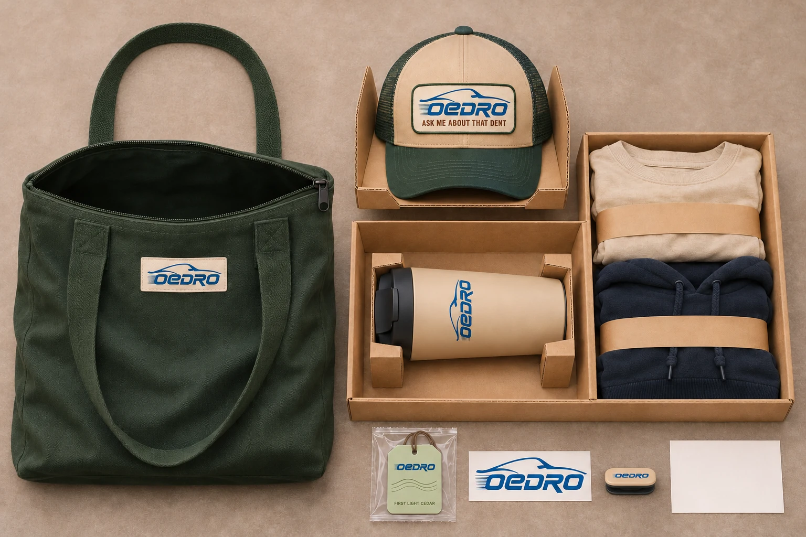
- 材质与开合
- 松绿帆布、双层袋底、织带提手和拉链。42 × 32 × 15 cm（16.5 × 12.6 × 5.9 in）的袋身装其余八件，分体纸架从宽约 36 cm 的拉链口分别放入，整袋进瓦楞箱。
- 运输外尺寸
- 44 × 33 × 17 cm（17.3 × 13.0 × 6.7 in）。估计毛重 2.3 kg，体积重 4.11 / 4.94 kg（除数 6,000 / 5,000）。
- 每套包材
- ¥8–15，含运输外箱和固定材料。适合组套仓。拆完直接提走，省一个装饰盒。袋口较窄，要分片装架；拉链袋货款估 US$4–7，折合约 ¥27–47；加上外箱和内架共约 ¥35–62，托特只计一次。
帽冠定净高，帽檐和杯托定底面Packing Dimensions
帽子向后收拢网片，保留挺括前片和弯帽檐；横放杯子后，纸托两端挡住杯底与杯盖。左仓留宽约 22 cm、进深 25 cm，右仓留宽约 11 cm，另留隔板、折边和手指取物的位置。按这套摆法，首样净内尺寸取 36 × 27 × 19.5 cm（14.2 × 10.6 × 7.7 in）。
| 物品 | 占位长 × 宽 × 高 | 包络体积（L） |
|---|---|---|
| 卡车帽 Trucker cap | 24 × 20 × 11.3 | 5.42 |
| 12 oz 咖啡杯 Travel mug | 17 × 9 × 9 | 1.38 |
| 卫衣 Hoodie | 34 × 25 × 3.5 | 2.98 |
| T 恤 T-shirt | 27 × 21 × 2 | 1.13 |
| 托特包 Canvas tote | 24 × 18 × 1 | 0.43 |
| 挡风玻璃贴 Windshield decal | 15 × 5 × 0.2（护卡） | 0.015 |
| 香片 Air freshener | 13.5 × 9.5 × 0.5 | 0.064 |
| 气囊支架 Phone grip | 8 × 8 × 1.5 | 0.096 |
| 卡片 Insert card | 15.24 × 10.16 × 0.1 | 0.015 |
九件包络体积合计约 11.53 L，纸箱净空约 19.0 L。衣物和折袋平叠约 6.5 cm，承重纸桥约 0.7 cm，帽冠约 11.3 cm，顶部再留约 1 cm。纸桥的折脚直达箱底，支在衣物两侧；帽顶上方的压力经箱壁和侧边支撑传到底部。车贴护卡错开衣物最厚处，优先插入侧壁平袋。拉链袋试装目标为约 40.5 × 30.5 × 13.5 cm 的分体架。左仓净宽至少 24.4 cm，上段留 20.4 cm 给侧立帽子，下段留 8.8 cm 给带套横卧的杯子，纸梁与上下折边另占约 1 cm。右侧约 15 cm 宽放窄折衣物。瓦楞板分片折入，单片长边控制在 30 cm 内；先撑袋底、固定杯子，插入横梁，再在袋内转正帽子并装限位件，最后放窄折衣物。试样要能张开 13.5 cm、无挤压拉合拉链，按装满后的袋宽、厚度和封口高度反推外箱净空再定刀模。
砂岩杯设计含盖高 15.8 ± 0.4 cm、最宽 7.6 cm。组套时取掉 8.5 × 8.5 × 17.5 cm 的来料单盒，保留防擦套，杯仓预留 17 × 9 × 9 cm。网帽前冠设计高 10.5 ± 0.5 cm，帽檐中心伸出 7.0 ± 0.3 cm、宽 18.0 ± 0.5 cm。按后网收拢后外廓留 24 × 20 × 11.3 cm。纸香片 6 × 8 cm，阻香封袋 9.5 × 13.5 cm；砂丘支架带托约 8 × 8 × 1.5 cm。14.5 × 4.3 cm 的车贴连离型纸平插护卡，公路卡为 4 × 6 in。衣服折厚、帽子包络和装满后的箱重仍是估值。用最大码卫衣、实际帽撑和杯盖试装后再开刀模。
封箱与试寄Transit Protection
- 衣物与平件
- 卫衣和 T 恤分别平码、套纸带，卫衣放底部。飞机盒搭配 8.89 × 5.08 cm 的银字口袋卡，磁吸盒搭配 15.24 × 10.16 cm 公路明信片；总账按较大的公路卡。选公路卡时移到内盖平槽。帽冠用弧形纸撑托住前片，帽檐两侧留缝。
- 杯与小件
- 磁吸支架保持吸附面有保护片，和卡片分开。杯身加防擦纸套，杯托从两端或两道折环限位。香片单独热封在阻隔袋里，与衣物和杯口分隔；气囊支架压平入小袋。车贴和护卡平插进封套，局部空隙用折叠牛皮纸填紧。
- 首样验收
- 先装 10 套，涵盖最大、最小尺码；跌落用样另计备品。按最厚的 410 g/m²、3XL 卫衣实测折厚，盖合时帽顶保留间隙；需要加高时重新计泡。闭盒后向三个方向轻摇，应听不到硬物碰撞声。牺牲样做面、棱、角跌落和堆压检查，复开时帽前片无折痕、杯盖完好、香片无渗漏、贴膜无折线。量产前由承运商或实验室做 ISTA 3A 小包振动与冲击试验。
组装、美国寄送与总账Kitting, U.S. Delivery & Cost
200 份优先交国内组套仓装好，集中海运到美国仓再逐票派送。仓内组装预留每套 6–15 元，海运到美国个人地址约每份 17–35 美元，进口税另计。
谁来打包Assembly Options
- 组套仓 · 首选
- 九家分别送同一仓，按尺码拣齐九件，仓库留首件装箱照、重量和批次。预计 ¥6–15/套，共 ¥1,200–3,000，包材、运输另列。可一次交货代，也可按地址出库。
- 上海办公室
- 按每套 6–9 分钟，另加收货盘点与复核 6–10 人时，合计 26–40 人时。按 ¥40–60/人时估 ¥1,040–2,400，送货代另约 ¥200–600。准备两张工作台、尺码周转箱、秤、卷尺、纸托、胶带、打印机和待发区。适合试样和复核。
- 礼盒厂兼装
- 工费预留 ¥5–15/套，共 ¥1,000–3,000。可在同厂改盒和托，少转一次样；外厂来货清点、混尺码、代保管与逐票跨境需询价。选磁吸盒时优先问这条路线。
可接来料的供应商Kitting & Packaging Suppliers
在 1688 搜“来料礼盒组装”“跨境云仓组套代发”，也可向现有货代和礼品公司询同一份工单。仓库通常按件、按套或按出库票数收费，200 套已经超过部分服务商的起订量。
- 义乌 · HiSourcing
- 1 套起，前三件 US$0.20，超过三件的部分每件 US$0.05，九件 US$0.50，首张自供卡片按免费插卡计时为 US$0.45；外厂来料另按货值收 5%，中档货款 US$8,018 对应 US$400.90，加基本组套费共 US$490.90–500.90。可代发，运费另计。 组套价目
- 金华 · Milebond
- 50 套起，接 2–10 家来料。公开案例是 1,000 套、七件组装 ¥3/套。200 套九件、按尺码分装和逐址交运需询价。 来料与工费案例
- 集货仓 · Bafubao
- 普货清点 ¥0.30/件、目检 ¥0.80/件、组套 ¥0.80、贴标 ¥1、出库 ¥1.50。九件逐件清点和目检合计 ¥13.20/套，未税、包材和运输另计；200 份起做条件需询价。 仓内作业价
- 包材 · 1688Box
- 该包装商公开标示飞机盒 ¥2–5（100 起）、磁吸盒 ¥15–40（50 起）、内托 ¥1–8（100 起）、腰封 ¥0.50–3（200 起）。这些是基础款，38 cm 成品盒、瓦楞等级、纸托、打样和税运需询价。 盒型价目
给供应商的五个问题Quote Checklist
- 九家分批到货、一次做 200 套，收货点数、抽检或全检、尺码核对、库租各怎么算？自带供应商是否按货值收费？
- 能否先装 10 套，提供最大码合盒后的三边、毛重和跌落前后照片？打样、开版、刀模、包材、人工、含税价如何分列？
- 来货短少、错码、帽前片折痕或杯子碰伤，谁负责拍照、隔离、补装和补寄？每套能否追到装箱批次？
- 能否收密封干式香片？需要哪份安全数据表，实际承运人如何书面确认香片、磁吸支架及磁吸盒的航空收运条件？分别报整批到美国仓和逐个住宅地址的价格。
- 请用美西、中部、美东各一个匿名邮编同口径报价，列进口主体、税费支付方、仓内出库、末端、偏远附加、退件及理赔上限，并写明报价有效期。
从中国寄到美国住宅China to U.S. Residential Delivery
以飞机盒 38 × 29 × 21 cm、2.2 kg 为例。适用专线或商业快递时，长 × 宽 × 高除以 6,000 得 3.86 kg，除以 5,000 得 4.63 kg。这两类渠道取实重与体积重的较大值，再按对应档位进位。美国本土 48 州以外的地址单独报价。
- 邮政小包／国际特快
ePacket / EMS - 普通 e 邮宝对美限重 2 kg，2.2 kg 整套超限。EMS 按此箱三边及 2.5 kg 档，代理公开价约 ¥540–620/票，约 US$80–92，预计 7–15 个工作日。邮政交接环节较多，确认末端追踪和赔付。 中国邮政限重 · EMS 计重 · 首续重价一 · 首续重价二
- 跨境专线
Tracked direct line - 飞机盒计泡约 3.86 kg，按两家公开 1、2 kg 档的增量外推，每份约 US$50–75。云途标准线对美约 8–15 个工作日；税费、住宅和异常重派逐项核价。 云途时效 · XMDrop 重量档 · GP 重量档
- 商业快递
Commercial express - 按 5 kg 档，顺丰约 ¥1,141、DHL 约 ¥1,959（约 US$170–292/票基础价），预计 3–7 个工作日。适合急件或个别补寄；燃油、住宅、偏远及税费另核，破损留存外箱和照片。 顺丰价表 · DHL 价表
- 整批进口、本土派送
Bulk import + U.S. fulfillment - 海运约 US$17–35/份、35–60 个日历日；空运约 US$34–60/份、8–17 个工作日。均含美国仓逐票出库和美国末端、进口税另列。海运需防潮防压，单次查验会影响整批；美国仓收货抽检，备品另订后可在当地补寄。 海运与空运区间 · 美国地面派送
- 包装仓代寄
Packing partner shipping - 工厂交同一条专线时，按 US$50–75 线路费加 US$0–5 独立贴单交运，共约 US$50–80/份，组装后约 8–15 个工作日。工费已经含贴单时扣掉重复项；确认实际承运人、全程单号、税费与丢件赔付。
200 箱裸方约 4.63 m³、毛重约 440 kg，加外主箱或托盘后按 4.9–5.3 m³ 估。海运按 上海至洛杉矶拼箱分项测算：每立方米 US$195–355 加整票固定费 US$350–725，含两端港杂、报关代理及到仓配送。洛杉矶示例的中档为 5.1 m³ × US$275 + US$538 = US$1,940.50；美东入仓另报头程。美国仓每份再加 US$1–3；USPS 住宅派送按 2026 年节日季商业价的 5 lb 档的近、中、远区 US$9.70／13.48／19.19。2.2 kg 离 5 lb 只差约 68 g，打样时连胶带一起称。拉链托特款估 2.3 kg，至少进 6 lb 档；磁吸盒体积超过 1 ft³，按美国邮政实测及进位规则另计体积重。
OEDRO 公开配送政策列有加州、得州、佐治亚州和新泽西州等履约仓点。若 2026 年 12 月 21–27 日从中国发出，海运到人约在 2027 年 1 月 25 日至 2 月 25 日，美国末端按实际交寄日更新费率。具体仓能否接推广品、逐票出库以及合同价需询价；报价需含到仓预约、入库、仓租、出库和末端。 OEDRO 美国配送政策
入境申报与税款U.S. Customs
截至 2026 年 11 月 24 日，美国继续暂停 800 美元以下商业小包的免税待遇。品牌礼包按商业推广品申报，列九件英文品名、材质、原产地、数量和有依据的价值。报关行按进口时适用税号、附加税与豁免条件核算；适用的中国商品可能另加 12.5% 的第 301 条关税。
邮政新申报流程自 2026 年 7 月 24 日生效，部分邮件强制使用电子申报类别 13 的日期延至 2027 年 1 月 20 日。让报关行书面确认进口责任人和税费支付方；选完税交货（DDP）时，用书面到门价替换已经涵盖的运费、代理费和税款。香片提交成分与安全数据表（SDS）核承运，衣物核纤维和原产地标签，杯体、杯盖备食品接触材料文件。
美国海关免税指引 · 邮政新流程 · 电子申报延期 · 第 301 条关税适用范围 · 美国现行税则
200 份要花多少钱Cost for 200 Kits
每套九件货约 US$31.38–48.81。用飞机盒、国内仓组装、海运后在美国派送，中档约 US$88.36/份，200 份共 US$17,672。
| 选款与批发价出处 | 低档 | 中档 | 高档 |
|---|---|---|---|
| 砂岩保温杯 Sandstone Travel Mug | 3.58 | 4.62 | 5.66 |
| 清晨雪松香片 First Light Cedar | 0.25 | 0.45 | 0.65 |
| 凹痕有故事卡车帽 Ask Me About That Dent | 3.00 | 4.35 | 5.70 |
| 土路账单 T 恤 The Dirt Was Free | 6.50 | 8.00 | 9.50 |
| 浅苔毛圈卫衣 Buff It Out Later | 13.00 | 15.50 | 18.00 |
| 雾蓝侧袋托特 Blue Pocket Tote | 2.50 | 3.50 | 4.50 |
| 尘土是收据车窗贴 Dirt Is a Receipt | 0.30 | 0.52 | 0.75 |
| 沙丘磁吸气囊支架 Dune | 2.00 | 2.75 | 3.50 |
| 公路明信片 Road Note Postcard | 0.25 | 0.40 | 0.55 |
| 九件合计 | 31.38 | 40.09 | 48.81 |
货款按九款选品的同款 200 件询价区间估算。砂岩杯含字标和单盒估 ¥24–38，车贴估 ¥2–5，折美元后按美分取整。杯的同类款 50–499 件挂牌 US$3.98；235 g/m² T 恤参照 240 g/m² 空白款 US$4.03 加图案 US$2 起；410 g/m² 卫衣参照 450 g/m² 毛圈款 200 件档 US$11.30。表内预留对应印花、织章、包材和 200 件混尺码的差价，实际成品需询价。
| 费用 | 低档 | 中档 | 高档 |
|---|---|---|---|
| 九类货款 | 6,276 | 8,018 | 9,762 |
| 飞机盒、腰封与纸托 | 298 | 402 | 507 |
| 国内仓组装与贴单 | 179 | 298 | 447 |
| 国内送仓 | 134 | 231 | 328 |
| 打样与制版预留 | 100 | 200 | 400 |
| 海运、两端杂费、报关经纪与到仓 | 1,306 | 1,941 | 2,607 |
| 美国仓操作 | 200 | 400 | 600 |
| 美国住宅派送 | 1,940 | 2,696 | 3,838 |
| 进口税额预留 | 1,255 | 2,806 | 4,881 |
| 破损、漏件与补寄预留 | 351 | 680 | 1,169 |
| 合计 | 12,039 | 17,672 | 24,539 |
三档均用飞机盒。包材按每套 ¥10／13.5／17，组装按不另收货值服务费的仓估每套 ¥6／10／15，九家工厂和包材送同一仓共 ¥900／1,550／2,200。国内段以每美元 ¥6.7111 折算。进口税暂按货款的 20%／35%／50% 测算预算压力，实际金额由报关行分项核定。破损及补寄按前述各项小计的 3%／4%／5% 取整。每种恰好订 200 件时没有补货余量，预留金用于另购破损件和补寄。最终货值和实重按样品及正式报价更新。美仓低档以已有仓接受低费率为条件。 中国外汇交易中心
每份控制在 US$50 时，低档还差 US$10.20，中档差 US$38.36。 低档货款 US$6,276 加未税物流 US$3,446，已用去 US$9,722，留给包装、组装、进口税和补寄的金额只有 US$278；要把 200 份压到每份 US$50，需要更低的服装货价、仓配合同价或调整礼包件数。中档两件衣物共 US$23.50，占货款约 59%；保持印花、改用现货近色并同款混尺码，若拿到低档价，200 套可省 US$800。包材从中档飞机盒改低档约省 US$104。每票运费降低 US$1，全批省 US$200；美东收件人较多时，把东岸入仓的运费和末端区价一起比较。
公开费率及供应商数量档查阅于 2026 年 11 月 24 日。最终价格待实装测量、承运审核和书面报价确认。
2026 年排期 Production Schedule
- 11/23–11/29
- 设计定稿，向供应商和代包装厂询价
- 11/30–12/06
- 选定供应商，寄样品
- 12/07–12/13
- 确认样品，走采购流程
- 12/14–12/20
- 开始生产，对接代包装厂
- 12/21–12/27
- 打包，寄出